Chapter 1: Mobile Network Foundations¶
Before 5G and 6G make sense you need the basics: what a cell is, how radio waves behave, why spectrum is precious and how many phones share the air. This chapter builds that foundation in plain English — duplexing and multiple access, the generations from 1G to 6G, the end-to-end architecture, the bodies that write the rules and the numbers used to measure networks. It ends by following a phone from power-on to a video stream and by mapping the industry as it stands in 2026.
1.1 What a Cellular Network Is: Cells, Base Stations and Frequency Reuse¶
A cellular network covers a country with thousands of small radio areas called cells, each served by a base station — a mast or rooftop with antennas and radio equipment. Your phone talks by radio only to a nearby base station; from there your call or data travels over cables to the rest of the network. Because each cell is small, the same radio frequencies can be reused in cells far enough apart, so millions of people can share a limited amount of spectrum.
Think of it like…
A big school split into classrooms: each teacher (base station) speaks to their own class at a normal volume, so many classes can use the same words at the same time — whereas one teacher shouting to the whole school could serve only one lesson at a time.
Real-world example
The fictional operator Northwind Mobile covers the city of Larkford (40 km across) with 250 sites, each with three sectors — 750 cells per band. If one giant tower covered the whole city, everyone would share a single cell's capacity; with 750 cells reusing the same spectrum, total capacity is hundreds of times larger. Downtown gets small cells every 200 m, while the countryside gets tall masts that each cover up to 10 km.
How it works¶
- The operator divides its area into cells, each served by a base-station antenna pointing one way — usually three 120° sectors per mast.
- Each cell broadcasts its identity and system information so phones can find it and decide whether to use it.
- Phones measure nearby cells and connect to the best one; the base station then schedules who transmits when, on which frequencies.
- Traffic leaves the base station over fibre or microwave links (backhaul) to the core network and onwards to the internet or another phone.
- The same frequencies are reused in other cells; planners control interference with antenna tilt, transmit power and careful reuse patterns.
- When traffic grows, the operator splits cells — adding sites, sectors or small cells — to multiply capacity.
Who uses it
RF planners, RAN engineers, site-acquisition teams, tower companies and every operator's network-planning department work with cells daily.
Key takeaway
Memorise the base-station name for each generation — BTS (2G), NodeB (3G), eNodeB or eNB (4G), gNodeB or gNB (5G) — and remember that one site usually carries three sectors per band, each a separate cell.
Going deeper
- Bell Labs engineers Douglas Ring and Rae Young described the cellular idea in 1947, but practical systems waited until the late 1970s, when cheap microprocessors could manage channel assignment and handover.
- Planners draw cells as hexagons for the maths, but real cells are irregular shapes set by terrain, buildings and antenna patterns; planning tools such as Atoll or Planet predict them from 3D maps and calibrated propagation models.
- AMPS used a 7-cell reuse pattern, GSM commonly used 4/12 or 3/9 patterns plus frequency hopping, while LTE and 5G run 'reuse 1' — every cell uses the whole carrier — and manage interference through scheduling and power control.
- Cell sizes range from macro cells (radius of about 1 to 30 km, masts 25-50 m tall) through micro cells (hundreds of metres) and pico cells (tens of metres) down to femtocells serving one home or office.
- A modern macro site often hosts four to six bands (for example 700 MHz, 800 MHz, 1800 MHz, 2100 MHz and 3.5 GHz) on shared multi-band antennas, so one physical site can carry 12-18 logical cells.
- Capacity grows three ways — more spectrum, better spectral efficiency and more cells; historically, adding cells (densification) has delivered the biggest gains.
Common mistakes & misconceptions
- Thinking one tower equals one cell: a site usually has three sectors per band, and each sector-carrier is a separate cell with its own identity.
- Believing bigger coverage is always better: a huge cell shares its capacity among more users; busy areas need smaller cells, not bigger ones.
- Assuming phones talk directly to each other: traffic always goes via base stations and the core network, except in special sidelink modes.
Try it: See which cell your phone or modem is using¶
# Android (many models): open the dialler and type
*#*#4636#*#* # Phone information: network type, signal in dBm
# iPhone: open the Phone app and dial
*3001#12345#* # Field Test mode: serving cell, RSRP/RSRQ
# Linux laptop with a cellular modem (ModemManager)
mmcli -L
mmcli -m 0 --location-enable-3gpp
mmcli -m 0 --location-get # MCC, MNC, tracking area code, cell ID
Key standards, network functions, technologies & tools¶
| Name | What it does | Example |
|---|---|---|
| Cell Core cellular concept · Concept · Current · All |
The area served by one base-station antenna sector on one carrier frequency, with its own identity. | A three-sector site running 800 MHz and 3.5 GHz carries six cells, each broadcasting its own cell identity. |
| Base station (BTS, NodeB, eNodeB, gNB) 3GPP; built by Ericsson, Nokia, Huawei, ZTE, Samsung · Equipment · Current · All |
Radio equipment and antennas that link phones over the air to the operator's network; renamed in every generation. | Northwind adds a gNB to an existing 4G site, sharing the mast, antennas, power supply and fibre with the old eNodeB. |
| Cell site Operators and tower companies · Equipment · Current · All |
The physical location — mast, rooftop or street pole — holding antennas, radios, power, batteries and the backhaul link. | A rooftop site in Larkford has antennas on three walls, radio units behind them and a battery cabinet for four hours of backup. |
| Sectorisation Radio network design practice · Technology · Current · All |
Splitting a site into directional cells, usually three 120° sectors, to multiply capacity and focus energy where people are. | Upgrading a rural mast from one omnidirectional cell to three sectors roughly triples the users it can serve at good quality. |
| Frequency reuse Bell Labs cellular concept (1947) · Concept · Current · All |
Using the same frequencies again in cells far enough apart that their signals do not seriously interfere. | AMPS reused channels in a 7-cell pattern; LTE uses reuse 1, every cell transmitting on the same 20 MHz. |
| Cell splitting and densification Radio network design practice · Concept · Current · All |
Adding more, smaller cells in busy areas so the same spectrum is reused more times per square kilometre. | When a stadium district congests, Northwind adds 40 small cells on lamp posts instead of buying more spectrum. |
| Macro cell Radio network design practice · Equipment · Current · All |
A high-power cell on a tall mast or rooftop covering roughly 1-30 km; the backbone of coverage. | A 40 m rural mast with 700 MHz antennas covers farms and a motorway out to about 15 km. |
| Small cells (micro, pico, femto) Small Cell Forum; 3GPP · Equipment · Current · All |
Low-power base stations covering tens to hundreds of metres, added for capacity or indoor coverage. | A shopping centre installs pico cells on each floor because the macro signal through concrete walls is too weak. |
| Physical Cell ID (PCI) 3GPP TS 36.211 (LTE), TS 38.211 (NR) · Concept · Current · 4G |
A short radio identity each cell broadcasts in its sync signals: 504 values in LTE, 1008 in 5G NR, reused across a network. | Planners give neighbouring cells different PCIs so phones never confuse two cells; clashes cause dropped handovers. |
| Global cell identity (CGI, ECGI, NCGI) 3GPP TS 23.003 · Concept · Current · All |
A worldwide-unique cell identity combining the network code (MCC+MNC) with the cell's own number. | Network logs record the ECGI of the cell where each call dropped, so engineers can find the problem site. |
| Co-channel interference Radio engineering · Concept · Current · All |
Unwanted signal from other cells using the same frequency; the main capacity limit in dense networks. | At the boundary between two cells, a phone hears both at similar strength, so its SINR and speed fall sharply. |
| Antenna tilt and azimuth AISG standard for remote electrical tilt (RET) · Technology · Current · All |
The downward angle and compass direction of a sector antenna, adjusted to shape coverage and limit interference. | An engineer adds 2° of electrical downtilt remotely to stop a hilltop cell overshooting into a neighbouring town. |
| Coverage vs capacity trade-off Radio network design practice · Concept · Current · All |
Large cells give cheap coverage but little capacity per user; small cells give capacity but cost more sites. | Northwind uses 700 MHz macro cells for rural coverage but 3.5 GHz small cells in the city centre for capacity. |
| Cell radius limits (timing advance) 3GPP TS 45.010 (GSM), TS 36.213 (LTE) · Concept · Current · All |
Timing corrections for signal travel time cap a cell's size: about 35 km in standard GSM, up to 100 km with special LTE formats. | A coastal LTE cell uses a long random-access preamble format so ships 60 km offshore can still connect. |
1.2 Handover, Mobility and Roaming¶
Mobility means your connection follows you as you move. When your phone is idle it quietly picks the best cell itself and tells the network roughly where it is, so incoming calls can find it (paging). During a call or download the network moves you from one cell to the next — a handover — in a few tens of milliseconds. Roaming extends the same idea to other operators' networks, even abroad.

Think of it like…
A relay race: the baton (your call) passes from runner to runner (cell to cell) without stopping. In idle mode you are more like a hotel guest who only tells reception which floor they are on, so a message can still find them.
Real-world example
Amara streams music on a train from Larkford to Bayport at 120 km/h. Every minute or two her phone reports that a neighbouring cell is 3 dB stronger than the current one; the network orders a handover and the music never stalls. On holiday in Spain her UK SIM registers on a Spanish network, which first checks with her home operator that she is allowed to roam.
How it works¶
- Idle phones 'camp' on a cell, listen for paging and re-select cells using thresholds the network broadcasts; they report their location only when entering a new tracking area or when a timer expires.
- For an incoming call or data, the core network pages the phone in all cells of its last known tracking area; the phone answers and connects.
- In connected mode the network configures measurements; the phone sends a measurement report when a trigger is met, such as event A3 (a neighbour is better than the serving cell by an offset).
- The source base station asks the target to prepare resources, then commands the phone to switch; buffered data is forwarded so nothing is lost.
- The core network switches the data path to the new base station and the old one releases its resources.
- When roaming, the visited network fetches authentication data from the home network's subscriber database over international signalling links.
Who uses it
RAN optimisation engineers, drive-test engineers, roaming managers and interconnect teams handle mobility, and every app developer quietly depends on it.
Key takeaway
Know the difference: idle mode uses cell reselection (the phone decides), while connected mode uses handover (the network decides, helped by the phone's measurement reports).
Going deeper
- LTE and NR define measurement events A1-A6 for intra-system cells and B1/B2 for other systems; event A3 with a 2-3 dB offset and a time-to-trigger of a few hundred milliseconds is the classic handover trigger.
- Hard handover (break-before-make) is used in GSM, LTE and NR; cdmaOne and WCDMA used soft handover, where a phone talks to two or three cells at once and the network combines the signals.
- An LTE intra-frequency handover typically interrupts user data for roughly 30-60 ms; 5G Release 16 added conditional handover and DAPS (dual active protocol stack) to cut failures and interruption toward zero.
- Location areas (2G/3G circuit domain), routing areas (2G/3G packet domain) and tracking areas (4G/5G) trade signalling load: larger areas mean fewer updates but more cells to page for each incoming call.
- Roaming relies on numbering: an IMSI starts with a 3-digit Mobile Country Code (234 UK, 310-316 USA, 404/405 India) and a 2- or 3-digit Mobile Network Code, so any network can tell where a SIM comes from.
- Home routing sends roaming data back through the home network's gateway, adding delay; local breakout uses the visited network's gateway. Most 4G data roaming is still home-routed.
- Handover failures are classed as too-late, too-early, wrong-cell or ping-pong; Self-Organising Network (SON) features tune offsets per neighbour pair automatically.
Common mistakes & misconceptions
- Confusing roaming with handover: handover moves you between cells; roaming means being served by a network other than your home operator.
- Thinking an idle phone constantly reports its position: it updates only on a tracking-area change or a periodic timer, so the network knows an area, not the exact cell.
- Assuming the phone decides handovers: in connected mode the network decides; the phone measures and reports.
Try it: Watch the tracking area and cell change while you travel (Linux + cellular modem)¶
# ModemManager: print location info every 10 seconds while on a train or bus
mmcli -m 0 --location-enable-3gpp
while true; do
date +%T
mmcli -m 0 --location-get | grep -E 'tracking area|cell id'
sleep 10
done
Key standards, network functions, technologies & tools¶
| Name | What it does | Example |
|---|---|---|
| Handover (handoff) 3GPP TS 36.300 (LTE), TS 38.300 (NR) · Procedure · Current · All |
Moving an active connection from one cell to another without dropping the call or data session. | A video call continues smoothly as a car drives from one motorway cell into the next. |
| Hard vs soft handover 3GPP / 3GPP2 · Concept · Current · All |
Hard: drop the old cell then join the new (GSM, LTE, NR). Soft: connect to several cells at once (CDMA, WCDMA). | A 3G phone at a cell edge was linked to three NodeBs simultaneously; its LTE successor switches cleanly between cells instead. |
| Cell reselection 3GPP TS 36.304 (LTE), TS 38.304 (NR) · Procedure · Current · All |
An idle phone's own decision to move to a better cell, using priorities and thresholds broadcast by the network. | A phone idling on 3.5 GHz drops to 800 MHz when walking into a basement, without contacting the network. |
| Paging 3GPP TS 36.331, TS 38.331 · Procedure · Current · All |
The network's broadcast call to wake an idle phone when data or a call arrives for it. | An incoming WhatsApp call triggers paging in all 60 cells of the phone's tracking area until it answers. |
| Tracking area / location area 3GPP TS 23.003 · Concept · Current · All |
A group of cells the phone can move within without telling the network; it updates when it enters a new area. | Commuters crossing into a new tracking area send a tracking area update, creating signalling peaks at rush hour. |
| Measurement report (event A3) 3GPP TS 36.331, TS 38.331 · Procedure · Current · 4G |
A message telling the base station a neighbour cell has become better than the serving cell by a set offset. | With A3 offset 3 dB and time-to-trigger 320 ms, a phone reports once the neighbour stays 3 dB stronger for 320 ms. |
| X2 / Xn handover 3GPP TS 36.423 (X2), TS 38.423 (Xn) · Procedure · Current · 4G |
A handover negotiated directly between two neighbouring base stations, with the core only switching the path afterwards. | Two eNodeBs linked by X2 hand over a user in about 50 ms without involving the MME in preparation. |
| Inter-RAT handover 3GPP · Procedure · Current · All |
A handover between different radio technologies, such as 5G to 4G or 4G to 3G. | Leaving 5G coverage in a tunnel, a phone hands over to the operator's LTE layer and keeps its IP session. |
| Conditional handover (CHO) 3GPP Release 16 · Technology · Current · 5G |
The network pre-prepares target cells and lets the phone execute the handover itself when a condition is met. | On high-speed rail, CHO reduces handover failures because the command arrives before the signal gets too weak. |
| Radio link failure (RLF) 3GPP TS 36.331, TS 38.331 · Concept · Current · All |
Loss of the radio connection when signal quality stays too low, forcing the phone to re-establish on another cell. | Late handovers at a busy junction show up in network counters as a cluster of radio link failures. |
| Roaming GSMA; 3GPP · Service · Current · All |
Using another operator's network — usually abroad — with your home SIM, based on agreements between operators. | A Kenyan tourist's SIM registers on a French network, which checks her subscription with her home operator before granting service. |
| MCC and MNC (PLMN identity) ITU-T E.212; 3GPP TS 23.003 · Standard · Current · All |
Mobile Country Code (3 digits) plus Mobile Network Code (2-3 digits) identify each operator's public land mobile network. | PLMN 234-15 is a UK network (MCC 234); the phone shows its name after reading it from system information. |
| Home routing vs local breakout GSMA roaming guidelines · Concept · Current · All |
Whether a roamer's data exits via the home network's gateway (home routing) or the visited network's (local breakout). | A US traveller in Japan sees 180 ms ping times because her data is home-routed back to the United States. |
1.3 〰️ Radio Waves 101: Frequency, Wavelength, Bandwidth and Modulation¶
Mobile networks send information as radio waves — invisible electromagnetic waves that oscillate millions or billions of times per second; that rate is the frequency, measured in hertz (Hz). As frequency rises the wavelength shrinks, which changes how far signals travel and how big antennas are. Bandwidth is the width of the frequency slice you use, and data is carried by changing the wave's strength and timing (modulation).
Think of it like…
Frequencies are like lanes on a motorway: bandwidth is how many lanes you own, modulation is how many passengers you pack into each car, and noise is the fog that limits how tightly you can pack before mistakes happen.
Real-world example
Northwind's 3.5 GHz carrier has a wavelength of about 8.6 cm, so a 64-element antenna fits in a panel under a metre tall; its 700 MHz carrier has a 43 cm wavelength — great for reaching farms, but the antennas are long. Near the mast, Leo's phone uses 256QAM (8 bits per symbol); at the cell edge it falls back to QPSK (2 bits per symbol) and its speed drops.
How it works¶
- A transmitter generates a carrier wave at a set frequency, for example 1800 MHz.
- Data bits are mapped onto symbols by changing the wave's amplitude and phase (modulation such as QPSK or 64QAM).
- Error-correcting code (turbo, LDPC or polar codes) adds redundancy so the receiver can repair errors.
- The signal occupies a bandwidth, for example 20 MHz; wider bandwidth carries more symbols per second.
- The receiver demodulates and decodes the symbols, while link adaptation keeps choosing the modulation and coding that suit the current signal quality.
Who uses it
RF engineers, antenna designers, chip and modem designers, spectrum managers and test engineers use these ideas every day.
Key takeaway
Memorise λ = c ÷ f with c ≈ 300,000,000 m/s: 300 MHz → 1 m, 3 GHz → 10 cm, 30 GHz → 1 cm.
Going deeper
- Cellular systems today use roughly 400 MHz to 52.6 GHz, with 5G FR2 extended to 71 GHz; wavelengths range from about 75 cm down to under half a centimetre.
- Antenna elements are typically about half a wavelength long, which is why mmWave phones can hide tiny antenna arrays while 700 MHz base-station antennas are often 1.5-2.5 m tall.
- Higher-order modulation needs a cleaner signal: 256QAM generally needs SINR above roughly 20-25 dB, whereas QPSK with strong coding still works at around 0 dB or even below.
- The modulation and coding scheme (MCS) is re-chosen every scheduling interval (1 ms in LTE, as little as 0.125 ms in 5G) from channel quality indicator (CQI) reports — this loop is called link adaptation.
- Error-correction codes changed over the generations: convolutional codes in GSM, turbo codes for 3G and 4G data, and in 5G LDPC codes for data and polar codes for control information.
- OFDM splits a wide channel into many narrow subcarriers (15 kHz apart in LTE), each carrying slow symbols, which makes the signal robust against echoes from buildings (multipath).
Common mistakes & misconceptions
- Thinking higher frequency is 'faster' by itself: speed comes from the bandwidth available and signal quality, not from the carrier frequency.
- Mixing up bandwidth in MHz with data rate in Mbit/s: they are linked by spectral efficiency (bits per second per hertz), which depends on modulation, coding and MIMO.
- Believing 5G uses a different, more dangerous kind of radiation: it is the same non-ionising radio energy as earlier generations, kept within international exposure limits.
Try it: Compute wavelengths and bits per symbol in Python¶
import math
c = 299_792_458 # speed of light, m/s
for f in [700e6, 1.8e9, 3.5e9, 28e9]:
print(f'{f/1e9:5.2f} GHz -> wavelength {c/f*100:6.1f} cm')
for name, m in [('QPSK', 4), ('16QAM', 16), ('64QAM', 64), ('256QAM', 256), ('1024QAM', 1024)]:
print(f'{name:8s} {int(math.log2(m))} bits per symbol')
Key standards, network functions, technologies & tools¶
| Name | What it does | Example |
|---|---|---|
| Frequency (hertz) SI unit; ITU Radio Regulations · Concept · Current · All |
How many times per second a radio wave oscillates; 1 GHz is one billion cycles per second. | LTE Band 3 phones transmit around 1.75 GHz and receive around 1.85 GHz. |
| Wavelength Physics: λ = c / f · Concept · Current · All |
The physical length of one wave cycle; it shrinks as frequency rises and sets antenna size and propagation behaviour. | A 28 GHz mmWave signal has a 1.07 cm wavelength, so dozens of antenna elements fit on a phone's edge. |
| Channel bandwidth 3GPP TS 36.101, TS 38.101 · Concept · Current · All |
Width of spectrum a carrier occupies: 200 kHz (GSM), 5 MHz (3G), up to 20 MHz (LTE), up to 100 MHz (5G FR1). | Moving from a 20 MHz LTE carrier to a 100 MHz 5G carrier gives roughly five times the raw capacity. |
| Carrier Radio engineering · Concept · Current · All |
A radio signal at a defined centre frequency and bandwidth that carries one cell's transmissions. | A site with two LTE carriers in Band 3 and one 5G carrier in n78 runs three carriers per sector. |
| Modulation Radio engineering · Concept · Current · All |
Encoding bits onto a wave by changing its amplitude, phase or frequency. | GSM used GMSK, a frequency-based scheme; LTE and 5G use QPSK and several QAM orders. |
| QPSK Radio engineering; used in 3G, 4G, 5G · Technology · Current · All |
Quadrature phase-shift keying: four phase states, 2 bits per symbol; robust at weak signal. | A phone at the cell edge falls back to QPSK so its control and data still decode reliably. |
| QAM (16, 64, 256, 1024) Radio engineering; 3GPP · Technology · Current · All |
Quadrature amplitude modulation: combines amplitude and phase to carry 4, 6, 8 or 10 bits per symbol. | LTE added 256QAM downlink in Release 12; 5G adds 1024QAM for very clean signals such as fixed wireless. |
| Symbol and symbol rate Radio engineering · Concept · Current · All |
A symbol is one modulated 'chunk' of signal; the symbol rate is how many are sent per second. | One LTE subcarrier carries about 14,000 symbols per second; with 64QAM that is 84 kbit/s raw per subcarrier. |
| Channel coding (FEC) 3GPP TS 36.212 (turbo), TS 38.212 (LDPC, polar) · Technology · Current · All |
Forward error correction adds structured redundancy so receivers can fix bit errors without retransmission. | 5G uses LDPC codes for user data because they decode quickly at multi-gigabit rates. |
| MCS and link adaptation 3GPP TS 36.213, TS 38.214 · Technology · Current · All |
Choosing the modulation and coding scheme each scheduling interval to match the reported channel quality. | As a bus moves away from the mast, the scheduler steps Ana's MCS down from 256QAM to 16QAM within milliseconds. |
| Multipath and fading Radio propagation · Concept · Current · All |
Reflections from buildings arrive at slightly different times, adding or cancelling and making the signal fluctuate. | Moving a phone 10 cm can change received power by 10-20 dB in a city street because of fading. |
| Doppler shift Radio propagation · Concept · Current · All |
A frequency shift caused by motion between transmitter and receiver; larger at higher speeds and frequencies. | At 300 km/h on 3.5 GHz the shift is about 1 kHz, which high-speed-train cells must correct. |
| OFDM Used by LTE, 5G NR, Wi-Fi, DVB-T · Technology · Current · 4G |
Orthogonal frequency-division multiplexing: many closely spaced, overlapping but non-interfering subcarriers carrying parallel slow symbols. | A 20 MHz LTE carrier uses 1,200 subcarriers 15 kHz apart, each carrying its own QAM symbols. |
| RF exposure limits (ICNIRP) ICNIRP 2020 guidelines; national regulators · Regulation · Current · All |
International limits on radio-frequency exposure that base stations and phones must meet, with large safety margins. | Before switching on a rooftop site, Northwind calculates exclusion zones so public exposure stays below ICNIRP limits. |
1.4 Signal, Noise, Path Loss and Shannon's Limit¶
Radio signals get weaker — enormously weaker — as they travel, and they compete with background noise and other cells' signals. Engineers measure power in decibels (dB and dBm) because the numbers span huge ranges. Shannon's formula sets the maximum data a channel can carry for a given bandwidth and signal-to-noise ratio — no engineering trick can beat it.

Think of it like…
Talking across a noisy party: the further away you are, the quieter your voice arrives (path loss); music and chatter are the noise; Shannon's law tells you how fast you can talk and still be understood given how loud you are compared with the noise.
Real-world example
Leo sits indoors with his phone reading RSRP -105 dBm and SINR 3 dB on Northwind's 100 MHz 5G carrier, and gets about 50 Mbit/s. Moving to the window, RSRP improves to -85 dBm and SINR to 18 dB; the modem switches to 256QAM and four layers and speed jumps to several hundred Mbit/s on the very same cell.
How it works¶
- The transmitter sends at a known power — about 40-80 W (46-49 dBm) per carrier for a macro cell, about 0.2 W (23 dBm) for a phone.
- Free-space path loss grows with distance and frequency: FSPL(dB) = 20·log10(d km) + 20·log10(f MHz) + 32.44.
- Real environments add walls, foliage, bodies and terrain shadowing, while antenna gains add some power back.
- The receiver sees the wanted signal (S), thermal noise (N) and interference from other cells (I); SINR = S ÷ (I + N).
- Shannon's limit gives capacity C = B × log2(1 + SINR): doubling bandwidth doubles capacity, but doubling SINR adds only about 1 bit/s per hertz.
- Planners add up all gains and losses in a link budget to find the maximum allowed path loss, and from it the cell radius.
Who uses it
RF planners, link-budget and drive-test engineers, optimisation teams and modem designers.
Key takeaway
Remember the decibel shortcuts: +3 dB doubles power, +10 dB is ten times; 0 dBm = 1 mW and 30 dBm = 1 W. And Shannon's lesson: bandwidth scales capacity linearly, signal quality only logarithmically.
Going deeper
- Thermal noise is -174 dBm per hertz at room temperature; over 20 MHz that is about -101 dBm, and a phone's noise figure of 7-9 dB raises the practical floor to around -93 dBm.
- LTE and NR phones report RSRP (power of one reference-signal resource element, roughly -44 to -140 dBm), RSRQ and SINR; because RSRP is per resource element, it reads 20-30 dB below the total received power (RSSI).
- Free-space loss rises 6 dB per doubling of distance; in cities the effective exponent is 3 to 4 (9-12 dB per doubling), captured by models such as Okumura-Hata, COST-231 and 3GPP TR 38.901.
- The uplink usually limits coverage because a phone transmits only about 23 dBm (200 mW, power class 3) while a macro cell sends 43-49 dBm per carrier; high-power UE (26 dBm, power class 2) helps on TDD bands.
- Shannon's 1948 limit applies per spatial stream; MIMO multiplies capacity by sending several streams, and modern LDPC and turbo codes perform within about 1 dB of the limit.
- Average LTE cell spectral efficiency is roughly 1.5-2.5 bit/s/Hz in loaded networks, while 5G massive-MIMO cells can reach several times that in favourable conditions.
Common mistakes & misconceptions
- Treating signal 'bars' as a measurement: each phone maker maps bars differently; read RSRP and SINR values instead.
- Adding dBm values directly: add dB gains and losses to a dBm figure, but convert two dBm powers to milliwatts before summing them.
- Thinking more transmit power fixes everything: in interference-limited city networks, raising every cell's power raises interference too, so SINR barely improves.
Try it: Free-space loss and Shannon capacity in Python¶
import math
def fspl_db(d_km, f_mhz):
return 20*math.log10(d_km) + 20*math.log10(f_mhz) + 32.44
for f in (700, 1800, 3500, 28000):
print(f'{f:>5} MHz at 1 km: {fspl_db(1, f):5.1f} dB free-space loss')
B = 100e6 # a 100 MHz 5G carrier
for snr_db in (0, 10, 20, 30):
snr = 10 ** (snr_db / 10)
print(f'SNR {snr_db:2d} dB -> Shannon limit {B*math.log2(1+snr)/1e6:5.0f} Mbit/s per layer')
Key standards, network functions, technologies & tools¶
| Name | What it does | Example |
|---|---|---|
| Decibel (dB) Logarithmic ratio unit · Concept · Current · All |
A logarithmic way to express ratios: +3 dB is double, +10 dB is ten times, -10 dB is one tenth. | A cable losing 3 dB delivers half the power; two such cables in series lose 6 dB, a quarter. |
| dBm Power relative to 1 milliwatt · Metric · Current · All |
Absolute power in decibels referenced to 1 mW: 0 dBm = 1 mW, 30 dBm = 1 W, -100 dBm = 0.1 picowatt. | A phone transmitting at 23 dBm sends 200 mW; the base station may receive it at -110 dBm. |
| Path loss Radio propagation · Concept · Current · All |
How much a signal weakens between transmitter and receiver, caused by distance, frequency and obstacles. | Typical macro-cell path loss to an indoor phone is 120-140 dB — a power ratio of up to 10^14. |
| Link budget Radio network planning · Concept · Current · All |
A table summing transmit power, gains and losses to find the maximum path loss a link can tolerate. | A planner finds 3.5 GHz uplink allows 10 dB less path loss than 800 MHz, so cell edges shrink accordingly. |
| RSRP 3GPP TS 36.214 (LTE), TS 38.215 (NR SS-RSRP) · Metric · Current · 4G |
Reference Signal Received Power: the power of one reference-signal resource element; the main 4G/5G coverage measure. | Field engineers treat RSRP above -90 dBm as good and below -115 dBm as weak indoor coverage. |
| RSRQ 3GPP TS 36.214, TS 38.215 · Metric · Current · 4G |
Reference Signal Received Quality: RSRP relative to total received power, reflecting load and interference. | RSRQ worse than -15 dB with a decent RSRP hints at heavy interference or a busy neighbour cell. |
| SINR / SNR Radio engineering · Metric · Current · All |
Signal to interference-plus-noise ratio in dB; the quantity that most directly decides achievable speed. | At SINR 20 dB a 5G phone can use 256QAM; at 0 dB it is limited to QPSK with heavy coding. |
| RSSI 3GPP; IEEE 802.11 · Metric · Current · All |
Received Signal Strength Indicator: total power in the channel including signal, interference and noise. | A high RSSI with low SINR tells an engineer the phone hears plenty of power, mostly interference. |
| Thermal noise floor and noise figure Physics: kTB = -174 dBm/Hz · Concept · Current · All |
The unavoidable background noise in a receiver, raised further by imperfections described by the noise figure. | A 100 MHz 5G receiver with 7 dB noise figure has a floor of about -87 dBm. |
| Shannon-Hartley capacity Claude Shannon, 1948 · Concept · Current · All |
The theoretical maximum error-free data rate: C = B × log2(1 + SNR). | A 20 MHz channel at 20 dB SNR is limited to about 133 Mbit/s per spatial stream. |
| Spectral efficiency (bit/s/Hz) ITU-R M.2410; 3GPP · Metric · Current · All |
Data rate delivered per hertz of spectrum; the main yardstick for comparing radio technologies. | A cell delivering 300 Mbit/s over 100 MHz runs at 3 bit/s/Hz. |
| Propagation models (Hata, COST-231, TR 38.901) Okumura-Hata; COST-231; 3GPP TR 38.901 · Standard · Current · All |
Empirical and statistical formulas predicting path loss in urban, suburban and rural environments. | Planning software applies a calibrated COST-231 model to estimate how far each new 1800 MHz site will reach. |
| Building penetration loss 3GPP TR 38.901; ITU-R P.2109 · Concept · Current · All |
Extra loss when signals pass into buildings; larger at higher frequencies and with energy-efficient coated glass. | Modern low-emissivity windows can add 25-40 dB of loss at 3.5 GHz, so offices often need indoor small cells. |
| UE power class (23 dBm, 26 dBm HPUE) 3GPP TS 38.101-1 · Standard · Current · 5G |
The maximum transmit power a device may use; most phones are class 3 (23 dBm), high-power UE is class 2 (26 dBm). | HPUE support on n41 lets a phone double its uplink power and extend 2.5 GHz uplink coverage. |
1.5 Spectrum: Licensed, Unlicensed and Shared — and Why Mid-Band Is Gold¶
Spectrum is the range of radio frequencies, and governments control who may use which parts. Mobile operators mostly hold exclusive licences, often bought at auction; Wi-Fi uses unlicensed bands that anyone may use under power rules; shared bands let several users take turns. Low bands travel far, high bands carry huge capacity over short distances, and the middle (about 1-7 GHz) balances both — which is why mid-band is so valuable.
Low, mid and high band at a glance
| Low band (<1 GHz) | Mid band (1-7 GHz) | High band (24 GHz+) | |
|---|---|---|---|
| Example bands | 600, 700, 800, 900 MHz | 1.8, 2.1, 2.6, 3.5 GHz | 26, 28, 39 GHz |
| Typical carrier | 5-20 MHz | 20-100 MHz | 200-800 MHz |
| Macro cell reach | Several to 30+ km | About 1-3 km | 100-500 m |
| Indoor penetration | Good | Moderate | Poor |
| Typical speeds | Tens of Mbit/s | Hundreds of Mbit/s | Gbit/s in line of sight |
| Best for | Rural and indoor coverage | Urban capacity | Stadiums, hotspots, FWA |
Mid-band gives most of the capacity of high band with much of the reach of low band.
Think of it like…
Spectrum is like land: low band is cheap countryside where one house covers a lot of ground, mmWave is a tiny downtown plot where you can build a skyscraper, and mid-band is the suburbs — decent-sized plots, close to everyone.
Real-world example
In 2021 the US FCC's C-band auction (3.7-3.98 GHz) raised about $81 billion, with Verizon alone committing about $45 billion — a sign of how prized mid-band is. The fictional Northwind holds 2×10 MHz at 800 MHz for coverage, 2×20 MHz at 1800 MHz for 4G capacity and 100 MHz at 3.5 GHz for 5G.
How it works¶
- Countries agree global and regional allocations in the ITU Radio Regulations at World Radiocommunication Conferences (WRC).
- National regulators assign bands to operators by auction, comparative selection or renewal, with conditions such as coverage obligations, duration and fees.
- 3GPP defines numbered bands (for example LTE Band 20 or NR n78) with exact uplink and downlink ranges so devices can be built for them.
- Operators stack low, mid and high bands in a 'layer cake': low for coverage, mid for capacity, high for hotspots.
- Unlicensed bands (Wi-Fi at 2.4, 5 and 6 GHz) and shared bands (such as CBRS in the US) add capacity under rules that avoid conflicts.
Who uses it
Spectrum strategists, regulatory-affairs teams, RF planners, auction economists and private-network builders all work with spectrum.
Key takeaway
Know the three ranges by example: low band 600-900 MHz (coverage), mid band 1.7-4.2 GHz with 3.5 GHz as 5G's flagship, and high band (mmWave) 24-52 GHz in 5G's FR2.
Going deeper
- The ITU splits the world into three regions with different allocations, so phones support dozens of bands: 700 MHz is Band 28 (APT plan) in Europe and Asia but Bands 12-14 and 17 in the US.
- 3GPP has defined dozens of LTE bands and a growing list of NR bands; NR band names start with 'n' — n78 is 3300-3800 MHz TDD and n77 is 3300-4200 MHz TDD.
- Licences typically run 15-25 years and often carry obligations, such as covering a set percentage of the population or major roads and railways by a deadline.
- Analysts compare spectrum prices in dollars per MHz per head of population ($/MHz/pop); the US C-band auction reached roughly $0.9-1 per MHz-pop, well above typical European 3.5 GHz prices.
- The US CBRS band (3550-3700 MHz) shares spectrum in three tiers — incumbents, Priority Access Licences and General Authorized Access — coordinated in real time by Spectrum Access System databases.
- The upper mid-band (roughly 7-24 GHz, sometimes called FR3) is the leading candidate for 6G capacity; ranges such as 7.125-8.4 GHz and 14.8-15.35 GHz are being studied for WRC-27.
Common mistakes & misconceptions
- Thinking 'unlicensed' means unregulated: unlicensed bands have strict power limits and sharing etiquette such as listen-before-talk.
- Assuming mmWave is the 'real 5G': most 5G traffic worldwide runs on mid-band; mmWave is mainly used for hotspots, venues and fixed wireless.
- Forgetting band support: a phone lacking a country's key bands will perform poorly there even if it is labelled '5G'.
Key standards, network functions, technologies & tools¶
| Name | What it does | Example |
|---|---|---|
| Licensed spectrum National regulators (FCC, Ofcom, DoT, BNetzA) · Concept · Current · All |
Frequencies assigned exclusively to one operator in an area, giving predictable, interference-free quality. | Northwind's 15-year 3.5 GHz licence lets it plan capacity knowing no one else may transmit there. |
| Unlicensed spectrum National regulators; ITU Radio Regulations · Concept · Current · All |
Bands anyone may use without a licence if equipment follows power and sharing rules, mainly used by Wi-Fi. | Phones use 5 GHz Wi-Fi at home and can offload calls to it with Wi-Fi calling. |
| Shared spectrum FCC CBRS rules; Ofcom shared access; EU LSA · Concept · Current · All |
Spectrum used by several parties under coordination rules, often via a database that grants access. | A US factory runs a private LTE network on CBRS General Authorized Access spectrum approved by a SAS database. |
| Spectrum licence National regulators · Regulation · Current · All |
Legal permission to transmit in a band, area and period, often won at auction and carrying coverage obligations. | Germany's 2019 5G auction licences came with obligations to cover main roads and railways. |
| Low band (sub-1 GHz) ITU / 3GPP (e.g., n71, B20, B28) · Spectrum band · Current · All |
Frequencies below 1 GHz that travel far and penetrate buildings but offer narrow carriers. | T-Mobile US built its first nationwide 5G layer on 600 MHz (n71) for rural reach. |
| Mid band (1-7 GHz) ITU / 3GPP (e.g., B3, n41, n78) · Spectrum band · Current · All |
The balance between reach and capacity; hosts most 4G capacity and the main 5G layers. | Most European 5G traffic flows over 3.4-3.8 GHz carriers of 80-100 MHz each. |
| C-band (3.3-4.2 GHz) 3GPP n77 / n78 · Spectrum band · Current · 5G |
The core 5G mid-band range; wide TDD carriers suitable for massive MIMO. | Verizon and AT&T deployed C-band 5G (n77) in 2022 after the FCC's record auction. |
| High band / mmWave 3GPP FR2 (24.25-52.6 GHz; FR2-2 to 71 GHz) · Spectrum band · Current · 5G |
Very high frequencies with huge carriers but short range and poor penetration; used for hotspots and fixed wireless. | Stadiums use 28 GHz cells so tens of thousands of fans can upload videos simultaneously. |
| Upper mid-band (7-24 GHz) ITU-R WRC-27 studies; 3GPP 6G studies · Spectrum band · Research · 6G |
New spectrum range targeted for 6G capacity, between today's mid-band and mmWave. | Operators study 7-8 GHz for future 6G macro cells reusing existing 3.5 GHz sites. |
| 3GPP band numbers 3GPP TS 36.101 (LTE), TS 38.101 (NR) · Standard · Current · All |
Numbered band definitions (B1, B20, n78, n258...) fixing exact uplink and downlink frequency ranges. | A phone's spec sheet listing n1/n3/n7/n28/n78 tells a European buyer it supports the main 5G bands. |
| Wi-Fi bands (2.4, 5, 6 GHz) IEEE 802.11; national regulators · Spectrum band · Current · All |
Unlicensed bands used by Wi-Fi; the 6 GHz band opened for Wi-Fi 6E/7 in many countries from 2020. | A phone switches between home 6 GHz Wi-Fi and the operator's 5G as the owner leaves the house. |
| Digital dividend (700/800 MHz) ITU WRC decisions; national regulators · Concept · Current · 4G |
Low-band spectrum freed when TV moved from analogue to digital and reassigned to mobile. | Europe's 800 MHz band (Band 20) came from the first digital dividend and powered rural 4G. |
| ITU Radio Regulations and WRC ITU-R · Regulation · Current · All |
The international treaty allocating frequency bands to services, revised at World Radiocommunication Conferences about every four years. | WRC-23 in Dubai identified new mid-band spectrum for mobile; WRC-27 will consider bands for 6G. |
1.6 ↔️ Duplexing: FDD vs TDD¶
A connection needs both directions: downlink (network to phone) and uplink (phone to network). Duplexing is how a system separates them. FDD (frequency-division duplex) gives each direction its own frequency block at the same time; TDD (time-division duplex) uses one block and takes turns, switching hundreds of times per second.
FDD versus TDD
| FDD | TDD | |
|---|---|---|
| Spectrum | Paired: uplink + downlink blocks | Unpaired: one block |
| Directions | Simultaneous | Take turns in time |
| DL/UL split | Fixed by the band plan | Configurable, e.g. 4:1 |
| Synchronisation | Helpful | Mandatory (GNSS/PTP) |
| Channel reciprocity | No | Yes — eases beamforming |
| Typical bands | B1, B3, B20, n28 | B40, B41, n78, n258 |
| Mostly used for | 2G-4G, low-band 5G | Mid/high-band 5G, TD-LTE |
TDD trades simultaneous two-way traffic for flexibility and channel reciprocity.
Think of it like…
FDD is a two-lane road with one lane each way; TDD is a single-lane bridge with traffic lights that can give the busier direction more green time.
Real-world example
Northwind's 1800 MHz licence is paired: phones transmit on 1730-1750 MHz and receive on 1825-1845 MHz (Band 3, 95 MHz apart). Its 3.5 GHz 5G carrier is TDD: in each 2.5 ms 'DDDSU' pattern it spends three slots sending down, one special switching slot and one slot listening — roughly three-quarters downlink, matching how people mostly download video.
How it works¶
- FDD: the regulator assigns a paired band — an uplink block and a downlink block separated by a duplex gap; a duplexer filter in the radio keeps them apart.
- TDD: one unpaired block; time is divided into downlink and uplink slots, with a short guard period so distant signals arrive before the switch.
- TDD networks must be tightly time-synchronised (from GNSS or PTP), and neighbouring operators in the same band should use compatible patterns.
- The operator chooses the TDD ratio, for example 4:1 downlink-heavy, to match traffic.
- Modern networks mix both: FDD low and mid bands for coverage and uplink, TDD mid and high bands for capacity, combined by carrier aggregation.
Who uses it
Spectrum planners, RAN engineers, timing and synchronisation specialists and RF front-end designers.
Key takeaway
Remember: FDD = paired spectrum with continuous uplink; TDD = unpaired spectrum, flexible ratio, strict synchronisation. Nearly all mid-band 5G (n77, n78, n41) is TDD.
Going deeper
- The FDD duplex gap — 45 MHz in GSM 900, 95 MHz in Band 3, 190 MHz in Band 1 — lets filters isolate the powerful transmitted signal from the faint received one.
- LTE TDD defines seven uplink-downlink configurations (0-6) and several special-subframe formats; 5G NR makes the pattern configurable down to individual OFDM symbols through RRC signalling.
- TDD's guard period limits cell range: each microsecond of guard covers about 150 m of round-trip distance, and in some weather atmospheric ducting carries interference from cells hundreds of kilometres away.
- Because uplink and downlink share one frequency in TDD, a base station can estimate the downlink channel from uplink sounding signals (channel reciprocity), which makes massive MIMO beamforming much easier.
- Half-duplex FDD — never transmitting and receiving at the same instant — removes the costly duplexer and is used by many LTE-M and NB-IoT devices.
- Sub-band full duplex (SBFD), where a base station transmits and receives in different parts of a TDD carrier at the same time, is being introduced in 5G-Advanced (Release 19) to strengthen the uplink.
Common mistakes & misconceptions
- Thinking TDD wastes half its time: the ratio is configurable and TDD carriers are usually much wider, so they often carry more traffic than FDD carriers.
- Running unsynchronised TDD neighbours: two operators with different patterns in adjacent blocks cause severe base-station-to-base-station interference.
- Assuming the downlink is always the limit: coverage is usually limited by the weaker uplink, which makes paired low-band uplink spectrum precious.
Try it: Estimate the downlink share of common 5G TDD patterns¶
# D = downlink slot, U = uplink slot, S = special slot (assume 10 of 14 symbols downlink)
patterns = ['DDDSU', 'DDDDDDDSUU', 'DSUUU']
for p in patterns:
dl = p.count('D') + p.count('S') * 10 / 14
print(f'{p:12s} downlink ~ {dl / len(p):.0%}')
Key standards, network functions, technologies & tools¶
| Name | What it does | Example |
|---|---|---|
| FDD (frequency-division duplex) 3GPP; used since 1G · Technology · Current · All |
Separate frequency blocks for uplink and downlink, used simultaneously. | LTE Band 20 (800 MHz) pairs 832-862 MHz uplink with 791-821 MHz downlink. |
| TDD (time-division duplex) 3GPP · Technology · Current · All |
One frequency block shared between uplink and downlink by alternating time slots. | A 100 MHz n78 carrier alternates downlink and uplink slots every fraction of a millisecond. |
| Paired spectrum and duplex gap 3GPP band definitions · Concept · Current · All |
FDD bands come as two blocks separated by a fixed gap so radios can filter uplink from downlink. | Band 1 (2100 MHz) separates uplink and downlink by 190 MHz, simplifying phone filters. |
| Duplexer RF front-end component · Equipment · Current · All |
A filter that lets an FDD radio transmit and receive at the same time through one antenna. | A multi-band phone contains many duplexers, one for each FDD band it supports. |
| TDD slot pattern (e.g., DDDSU) 3GPP TS 38.213, TS 38.331 · Concept · Current · 5G |
The repeating sequence of downlink, special and uplink slots configured for a TDD carrier. | Several European regulators recommend a common 3.5 GHz frame such as DDDSU so neighbouring networks do not interfere. |
| Guard period 3GPP TDD frame design · Concept · Current · All |
Silent time when a TDD system switches from downlink to uplink, allowing for signal travel time. | A rural TDD cell uses a longer guard period so phones 15 km away can still fit their uplink. |
| TDD synchronisation 3GPP; ITU-T G.8271 time requirements · Concept · Current · All |
All TDD cells in an area must switch direction at the same instant, typically within ±1.5 µs. | When a site's GPS antenna fails, its TDD radios mute to avoid interfering with neighbours. |
| Channel reciprocity Radio engineering · Concept · Current · 5G |
In TDD, the uplink and downlink channels are nearly identical, so one can be estimated from the other. | A massive-MIMO base station shapes downlink beams from phones' uplink sounding reference signals. |
| Half-duplex FDD 3GPP Release 13 (LTE-M, NB-IoT) · Technology · Current · 4G |
An FDD device that transmits and receives at different times, avoiding a duplexer to save cost. | A cheap NB-IoT water meter uses half-duplex FDD because it sends only a few bytes per day. |
| TD-LTE 3GPP (LTE TDD mode) · Technology · Current · 4G |
The TDD variant of LTE, deployed at scale by China Mobile and in bands such as 2.3 and 2.6 GHz. | Reliance Jio combined TD-LTE at 2300 MHz with FDD LTE at 1800 and 850 MHz. |
| Supplementary downlink / uplink (SDL, SUL) 3GPP (e.g., Band 32, n80-n86) · Technology · Current · All |
A carrier used in only one direction, aggregated with a normal carrier to add capacity or uplink reach. | Operators in Europe add 1.5 GHz L-band SDL carriers to boost LTE downlink capacity. |
| Cross-link interference 3GPP TR 38.828 · Concept · Current · 5G |
Interference between base stations or phones when neighbouring TDD cells transmit in opposite directions at the same time. | A campus network using an uplink-heavy pattern next to a public downlink-heavy network suffers cross-link interference. |
| Sub-band full duplex (SBFD) 3GPP Release 19 (5G-Advanced) · Technology · Emerging · 5G-advanced |
Base station transmits and receives simultaneously in separate sub-bands of one TDD carrier to boost uplink. | Trials show SBFD can give phones more uplink opportunities without a separate paired band. |
1.7 Sharing the Air: FDMA, TDMA, CDMA and OFDMA¶
Multiple access is how many phones share one cell's spectrum without talking over each other. Each generation used a different trick: give each user its own frequency (FDMA), its own time slot (TDMA), its own code (CDMA), or a flexible block of many small subcarriers in time and frequency (OFDMA).
Think of it like…
At a party, FDMA puts each conversation in a separate room; TDMA lets people take turns speaking; CDMA lets everyone talk at once in different languages so you tune in to yours; OFDMA is a restaurant host who hands each group exactly as many tables as it needs, re-seating everyone every millisecond.
Real-world example
In 1988 Sara's analogue call got its own 30 kHz channel (FDMA). In 1998 GSM put her call in one of eight time slots on a 200 kHz carrier (TDMA). In 2006 her 3G phone shared 5 MHz with everyone else using a unique code (CDMA). Today her 5G phone gets a few hundred subcarriers for half a millisecond, then the scheduler gives them to someone else (OFDMA).
How it works¶
- FDMA: split the band into channels; each user gets a channel for the whole call (AMPS, NMT).
- TDMA: split each channel into time slots; users transmit in turn (GSM, D-AMPS).
- CDMA: spread each user's signal over a wide band with a unique code; each receiver de-spreads only its own signal (cdmaOne, CDMA2000, WCDMA).
- OFDMA: divide the channel into many orthogonal subcarriers and assign blocks of time and frequency to users every scheduling interval (LTE downlink, 5G both directions).
- On top, multi-user MIMO lets several users share the same time-frequency resource by separating them with beams.
Who uses it
Radio-protocol engineers, modem and DSP developers, and anyone preparing for physical-layer interview questions.
Key takeaway
One line per generation: 1G = FDMA, 2G = TDMA (GSM) or CDMA (cdmaOne), 3G = CDMA, 4G = OFDMA downlink + SC-FDMA uplink, 5G = OFDMA with CP-OFDM or DFT-s-OFDM in the uplink.
Going deeper
- GSM combines FDMA and TDMA: 200 kHz carriers, each divided into 8 time slots of about 577 µs within a 4.615 ms frame, carrying eight full-rate voice calls.
- cdmaOne spreads at 1.2288 Mchip/s over 1.25 MHz and WCDMA at 3.84 Mchip/s over 5 MHz; both rely on fast power control (800 and 1,500 times per second) so nearby phones do not drown distant ones.
- LTE subcarriers are 15 kHz apart; a 20 MHz carrier holds 1,200 usable subcarriers grouped into 100 resource blocks of 12 subcarriers each.
- OFDM adds a cyclic prefix (about 4.7 µs in LTE's normal mode) to each symbol as a buffer against echoes, costing roughly 7% overhead.
- LTE's uplink uses SC-FDMA (DFT-spread OFDM) because its lower peak-to-average power ratio lets phone amplifiers run more efficiently; 5G offers both CP-OFDM and DFT-s-OFDM uplink waveforms.
- Non-orthogonal multiple access (NOMA) superimposes users at different power levels; it was studied for 5G but not adopted as a mainstream feature.
Common mistakes & misconceptions
- Saying 3G is TDMA or 4G is CDMA: 3G air interfaces (WCDMA, CDMA2000) are CDMA-based; 4G and 5G are OFDMA-based.
- Confusing OFDM (a modulation method) with OFDMA (using OFDM to share among users): Wi-Fi used OFDM for years before adding OFDMA in Wi-Fi 6.
- Thinking CDMA has a fixed user limit like time slots: its capacity is 'soft', limited by the interference all users add.
Try it: CDMA in miniature: two users share the air with orthogonal codes¶
w1 = [1, 1, 1, 1] # user A's Walsh code
w2 = [1, -1, 1, -1] # user B's Walsh code
bit_a, bit_b = 1, -1 # A sends 1, B sends 0 (written as -1)
air = [bit_a * x + bit_b * y for x, y in zip(w1, w2)] # signals add on air
print('on air :', air)
print('A decodes:', sum(a * c for a, c in zip(air, w1)) / 4)
print('B decodes:', sum(a * c for a, c in zip(air, w2)) / 4)
Key standards, network functions, technologies & tools¶
| Name | What it does | Example |
|---|---|---|
| FDMA Used in AMPS, NMT, TACS · Technology · Legacy · 1G |
Frequency-division multiple access: each user gets a dedicated frequency channel for the whole call. | An AMPS call occupied a pair of 30 kHz channels for its entire duration, even during silence. |
| TDMA Used in GSM, D-AMPS (IS-136), PDC · Technology · Legacy · 2G |
Time-division multiple access: users share a carrier by transmitting in assigned time slots in turn. | A GSM carrier serves eight full-rate calls, each in its own 577 µs slot. |
| CDMA Qualcomm IS-95; 3GPP WCDMA; 3GPP2 CDMA2000 · Technology · Legacy · 3G |
Code-division multiple access: all users transmit together over a wide band, separated by unique spreading codes. | Dozens of 3G phones share one 5 MHz WCDMA carrier, each decoded with its own code. |
| OFDMA 3GPP LTE and NR; IEEE 802.11ax · Technology · Current · 4G |
Orthogonal frequency-division multiple access: users get different groups of subcarriers and time slots, reassigned each scheduling interval. | In one millisecond an LTE cell may give 30 resource blocks to a video viewer and 2 to a smartwatch. |
| SC-FDMA (DFT-s-OFDM) 3GPP TS 36.211, TS 38.211 · Technology · Current · 4G |
A single-carrier-like variant of OFDMA with lower power peaks, used for LTE uplink and optional in 5G uplink. | LTE phones use SC-FDMA uplink so their amplifiers run efficiently and batteries last longer. |
| Spreading codes (Walsh / OVSF) IS-95; 3GPP TS 25.213 · Concept · Legacy · 3G |
Mathematically orthogonal code sequences that separate users or channels in CDMA systems. | WCDMA gives a high-rate user a short OVSF code and a voice user a longer one. |
| Spread spectrum and processing gain Radio engineering · Concept · Legacy · 3G |
Spreading a signal over far more bandwidth than needed, which makes it resilient to interference. | A 12.2 kbit/s voice call spread to 3.84 Mchip/s gains about 25 dB against interference. |
| Subcarrier and cyclic prefix 3GPP OFDM numerology · Concept · Current · 4G |
Subcarriers are the narrow tones of OFDM; the cyclic prefix is a copied guard section protecting against echoes. | LTE's normal cyclic prefix of about 4.7 µs absorbs echoes from buildings up to roughly 1.4 km away. |
| MAC scheduler Vendor-specific; 3GPP MAC (TS 36.321, TS 38.321) · Technology · Current · All |
Base-station software deciding which users get which resources each interval, balancing throughput and fairness. | A proportional-fair scheduler gives the cell-edge user enough resources to keep streaming without starving others. |
| MU-MIMO (spatial division) 3GPP; IEEE 802.11 · Technology · Current · 5G |
Multi-user MIMO serves several users on the same time-frequency resource using separate beams. | A 64-antenna 5G cell sends different data to eight phones at once on the same subcarriers. |
| Near-far problem and power control CDMA system design · Concept · Legacy · 3G |
Close users can drown distant ones; fast power control equalises received power from all phones. | A WCDMA phone near the mast is told to cut power 1,500 times per second so distant users stay audible. |
| PAPR (peak-to-average power ratio) Radio engineering · Concept · Current · All |
How spiky a signal's power is; high PAPR forces amplifiers to back off and waste energy. | OFDM's high PAPR is why LTE chose SC-FDMA for battery-powered phones' uplink. |
| NOMA 3GPP studies (Rel-14/15); academic research · Technology · Research · 5G |
Non-orthogonal multiple access: users share the same resource at different power levels, separated by interference cancellation. | Researchers pair a near and a far user on one resource block, decoding the stronger signal first. |
| CSMA/CA IEEE 802.11 (Wi-Fi) · Protocol · Current · All |
Carrier-sense multiple access with collision avoidance: listen first, then transmit if free — Wi-Fi's contention method. | Unlike a cellular scheduler, a Wi-Fi laptop waits for silence before sending, which degrades under heavy load. |
1.8 The Generations at a Glance: 1G to 6G¶
Roughly every decade the mobile industry launches a new 'generation' — a new radio technology and network design that fixes the previous one's limits. 1G carried analogue voice, 2G made calls digital and added texting, 3G brought mobile internet, 4G made everything IP-based and fast enough for video, and 5G adds huge capacity, lower latency and machine connections. 6G is being standardised for around 2030.
Think of it like…
Like generations of cars: each new model keeps the four wheels (cells, base stations, SIM cards) but changes the engine — and old models are eventually taken off the road.
Real-world example
Rosa, 60, remembers a brick-sized analogue phone in 1990, a Nokia texting phone in 1999, a 3G BlackBerry in 2007, a 4G smartphone streaming films in 2014 and a 5G phone in 2022. Her grandson is likely to buy his first 6G-capable phone at the start of the 2030s.
How it works¶
- A generation begins as research plus a set of ITU requirements (the IMT family).
- 3GPP (or, earlier, ETSI, TIA and others) writes the specifications in releases.
- Regulators release spectrum, vendors build equipment, chipmakers ship modems, and the first networks launch.
- Over 5-10 years the generation matures (HSPA+ for 3G, LTE-Advanced for 4G, 5G-Advanced for 5G).
- Eventually the old generation is switched off ('sunset') and its spectrum is reused (refarmed) for newer technology.
Who uses it
Everyone in telecoms — marketing, product, engineering and regulators — talks in generations, and interviewers expect you to place technologies on the timeline.
Key takeaway
Anchor dates: 1979 first cellular network (Tokyo), 1991 first GSM call (Finland), 2001 first 3G (Japan), December 2009 first LTE (Stockholm and Oslo), April 2019 first 5G smartphone services (South Korea and the US), around 2030 for 6G.
Going deeper
- Generation labels are backed by ITU families: IMT-2000 (3G), IMT-Advanced (4G), IMT-2020 (5G) and IMT-2030 (6G); 1G and 2G predate the IMT framework.
- Peak rates rose roughly tenfold or more per generation: GSM data 9.6 kbit/s, 3G 384 kbit/s, HSPA+ 42 Mbit/s, LTE-Advanced 1 Gbit/s, and 5G NR multi-gigabit against an IMT-2020 target of 20 Gbit/s.
- Latency fell from well over 500 ms on GPRS to roughly 100 ms on HSPA, about 30-50 ms on LTE and around 10-20 ms on good 5G standalone networks.
- In-between steps got half numbers: 2.5G (GPRS), 2.75G (EDGE), 3.5G (HSPA), 3.9G (early LTE before it met IMT-Advanced) and '5.5G', Huawei's marketing name for 5G-Advanced.
- Each generation reuses earlier bands: 900 and 1800 MHz moved from GSM to 3G and LTE, and 2100 MHz from 3G to LTE and NR.
- Ericsson estimated about 2.9 billion 5G subscriptions at the end of 2025 — around a third of all mobile subscriptions — a faster ramp than 4G achieved at the same age.
Common mistakes & misconceptions
- Assuming generations replace each other overnight: 2G, 4G and 5G often run side by side for a decade or more.
- Treating '4G' and 'LTE' as identical: early LTE (Releases 8 and 9) did not meet ITU's IMT-Advanced requirements; LTE-Advanced (Release 10) did.
- Believing the 5G icon means a fully 5G connection: in non-standalone mode the phone still relies on 4G for control signalling and the 4G core.
Key standards, network functions, technologies & tools¶
| Name | What it does | Example |
|---|---|---|
| 1G (analogue cellular) NTT, AMPS (Bell Labs), NMT, TACS · Technology · Legacy · 1G |
First cellular systems: analogue FM voice, FDMA, no encryption, limited roaming; launched 1979-1985. | A 1985 car phone on AMPS could be overheard by anyone with a radio scanner. |
| 2G (GSM, cdmaOne, D-AMPS, PDC) ETSI (GSM), TIA (IS-95, IS-136), ARIB (PDC) · Technology · Legacy · 2G |
Digital cellular: encrypted voice, SIM cards (GSM), SMS and low-rate data; launched from 1991. | A 1999 Nokia 3210 on GSM made digital calls and sent 160-character texts. |
| 2.5G / 2.75G (GPRS, EDGE) ETSI / 3GPP · Technology · Legacy · 2G |
Packet-data upgrades to GSM giving always-on internet at tens to a few hundred kbit/s. | The original 2007 iPhone browsed the web over EDGE because it lacked 3G. |
| 3G (UMTS/WCDMA, CDMA2000, TD-SCDMA) 3GPP, 3GPP2; ITU IMT-2000 · Technology · Legacy · 3G |
Mobile internet era: CDMA-based radios, video calls and, with HSPA, multi-megabit data; launched from 2001. | In 2008 the iPhone 3G brought practical mobile web browsing to millions of users. |
| 4G (LTE, LTE-Advanced) 3GPP Release 8 onward; ITU IMT-Advanced · Technology · Current · 4G |
All-IP mobile broadband on OFDMA with a flat architecture; voice over IMS (VoLTE); launched from 2009. | 4G made HD video streaming and ride-hailing apps practical on phones in the early 2010s. |
| 5G (NR and 5G Core) 3GPP Release 15 onward; ITU IMT-2020 · Technology · Current · 5G |
New Radio with wide carriers, massive MIMO and a cloud-native core; targets broadband, low latency and IoT. | A 5G phone downloads a 2 GB game in under a minute on a 100 MHz mid-band carrier. |
| 5G-Advanced 3GPP Releases 18, 19 and 20 · Technology · Emerging · 5G-advanced |
The second phase of 5G, adding AI/ML, better uplink, energy saving, positioning and XR features. | China's operators began commercial 5G-Advanced services in 2024, marketing them as '5G-A' or '5.5G'. |
| 6G 3GPP Release 21 (planned); ITU IMT-2030 · Technology · Research · 6G |
The next generation, expected around 2030, with AI-native design, sensing and new upper mid-band spectrum. | 3GPP's Release 20 study items, starting in 2025, are shaping the first 6G specifications. |
| IMT-2000 ITU-R · Standard · Legacy · 3G |
ITU's family of 3G standards, including UMTS/WCDMA, CDMA2000, TD-SCDMA, EDGE and, from 2007, WiMAX. | Any technology in the IMT-2000 family could use the 3G bands identified by the ITU. |
| IMT-Advanced ITU-R (approved 2012) · Standard · Current · 4G |
ITU's 4G requirements: 1 Gbit/s low-mobility and 100 Mbit/s high-mobility peaks, met by LTE-Advanced and WirelessMAN-Advanced. | In 2012 ITU approved LTE-Advanced as 'true 4G' under IMT-Advanced. |
| IMT-2020 ITU-R Recommendation M.2150 · Standard · Current · 5G |
ITU's 5G framework and requirements, including 20 Gbit/s peak and 1 ms latency targets; 3GPP 5G was approved in 2021. | 3GPP's NR and LTE-based IoT technologies form the 3GPP 5G entry in IMT-2020. |
| IMT-2030 ITU-R Recommendation M.2160 (2023) · Standard · Research · 6G |
ITU's 6G framework with six usage scenarios, including sensing, AI and ubiquitous connectivity. | Requirements for IMT-2030 are being finalised so that candidate 6G technologies can be evaluated later in the decade. |
| WiMAX (IEEE 802.16e) IEEE; WiMAX Forum · Standard · Legacy · 4G |
A rival OFDMA broadband technology that lost to LTE; most WiMAX networks closed or migrated to TD-LTE. | Sprint's Clearwire WiMAX network launched in 2008 and was switched off in 2016. |
1.9 End-to-End Architecture: From Your Phone to the Internet¶
Every mobile network has the same big building blocks: the device (user equipment, UE), the radio access network (RAN) of base stations, the transport network linking sites, the core network that handles identity, sessions and mobility, and the links to the internet and to voice services (IMS). User data travels on the 'user plane', while the messages that set things up travel on the 'control plane'.
Think of it like…
A postal system: your phone is the house, the base station is the local post office, transport is the fleet of vans, the core is the sorting centre that knows every address and checks postage, and the internet is the rest of the world's mail.
Real-world example
When Kenji uploads a photo, it travels over the air to a gNB on a rooftop, along fibre backhaul to Northwind's regional data centre, through the core's user-plane gateway, then out to the internet and the cloud server. Separately, control-plane functions had already checked his SIM, set up his data session and noted which area he was in.
How it works¶
- UE: a phone, router or IoT module with a SIM or eSIM holding identities and secret keys.
- RAN: base stations handle the radio, scheduling, over-the-air encryption and handovers.
- Transport: fronthaul, midhaul and backhaul links (fibre, microwave) connect radio sites to data centres.
- Core: authenticates subscribers, tracks mobility, sets up data sessions, applies policy and charging, and anchors the user-plane path.
- Data networks: the internet, private corporate networks and IMS for voice, SMS and video calling.
- Support systems: OSS (operations) and BSS (billing and customer management) run the network as a business.
Who uses it
Solution architects, RAN, transport and core engineers, and telecom cloud teams all work within this picture.
Key takeaway
Draw it left to right in interviews — UE → RAN → transport → core → data network/IMS — and name each core per generation: 2G/3G circuit + packet core, 4G EPC, 5G 5GC.
Going deeper
- Each generation renamed the parts — 2G BSS plus NSS (MSC, HLR), 3G UTRAN plus CS/PS core, 4G E-UTRAN plus EPC, 5G NG-RAN plus 5GC — but the logical roles stayed remarkably similar.
- Control and user plane separation (CUPS in LTE Release 14, built into 5G) lets operators place user-plane gateways close to users for low latency while keeping control functions centralised.
- Transport is a major cost: a 5G macro site with 100 MHz massive MIMO may need 10 Gbit/s or more of backhaul, usually fibre or high-capacity E-band microwave.
- Core networks increasingly run as cloud-native software on Kubernetes in operator data centres or public clouds, instead of dedicated hardware appliances.
- IMS is a separate SIP-based core for voice, video and messaging reused by 4G and 5G; without it, a 4G phone must fall back to 2G or 3G to make calls.
- Networks exchange roaming and interconnect signalling through IPX carriers, using SS7 and Diameter in 2G-4G and HTTP/2 through security edge proxies (SEPP) in 5G.
Common mistakes & misconceptions
- Thinking the base station connects straight to the internet: traffic passes through the operator's core, which enforces identity, policy and charging.
- Mixing up control plane and user plane: signalling (attach, handover) and user data take different paths through different functions.
- Forgetting transport: many 'slow 5G' complaints are actually backhaul bottlenecks, not radio problems.
Key standards, network functions, technologies & tools¶
| Name | What it does | Example |
|---|---|---|
| UE (user equipment) 3GPP TS 21.905 · Device · Current · All |
Any device using the network — phone, tablet, router, car or sensor — made of mobile equipment plus a SIM/USIM. | A delivery van's telematics box is a UE just like a smartphone, with its own SIM and IMSI. |
| RAN (radio access network) 3GPP · Concept · Current · All |
All the base stations and radio equipment linking devices to the core network. | Northwind's RAN contains 9,000 sites and about 40,000 cells across four bands. |
| Transport network (fronthaul, midhaul, backhaul) ITU-T; IEEE; O-RAN · Concept · Current · All |
The links carrying traffic between radio units, baseband and core data centres. | A rural site with no fibre uses an 18 GHz microwave link to reach the nearest fibre hub. |
| Core network 3GPP TS 23.002 (2G-4G), TS 23.501 (5G) · Concept · Current · All |
The central brain handling authentication, mobility, sessions, policy, charging and connection to other networks. | When a subscriber stops paying, the core blocks her data sessions within seconds. |
| Core network generations (NSS, EPC, 5GC) 3GPP · Concept · Current · All |
2G/3G used separate circuit (MSC) and packet (SGSN/GGSN) cores; 4G introduced the all-IP EPC; 5G the service-based 5GC. | An operator in 2026 runs a 5GC for standalone 5G, an EPC for 4G and an old MSC still serving 2G. |
| Circuit switching vs packet switching Telecom fundamentals · Concept · Current · All |
Circuit switching reserves a path for a whole call; packet switching sends data in packets sharing capacity. | A 2G voice call held a dedicated time slot; a 4G VoLTE call sends small IP packets every 20 ms. |
| Control plane and user plane 3GPP architecture principle · Concept · Current · All |
Control plane carries signalling that sets up and manages connections; user plane carries the actual user data. | During a handover, control messages flow via the MME while the video keeps flowing through the gateways. |
| NAS and AS 3GPP TS 24.301, TS 24.501; TS 36.331, TS 38.331 · Concept · Current · All |
Non-access stratum: phone-to-core signalling; access stratum: phone-to-base-station radio signalling. | Registration is a NAS procedure carried transparently through the gNB; RRC setup is an AS procedure. |
| Data network and APN/DNN 3GPP TS 23.003 · Concept · Current · All |
The external network a data session connects to, named by an APN (2G-4G) or DNN (5G). | A smart-meter SIM uses a private APN that reaches only the utility's servers, not the public internet. |
| PLMN 3GPP; ITU-T E.212 · Concept · Current · All |
Public land mobile network: one operator's mobile network in one country, identified by MCC+MNC. | A phone in manual network selection lists the PLMNs it can see, such as 234-10 and 234-15. |
| OSS and BSS TM Forum frameworks; vendors such as Amdocs, Ericsson, Netcracker · Software · Current · All |
Operations support systems manage the network; business support systems handle billing, products and customers. | When a new 5G plan launches, the BSS rates usage while the OSS monitors the cells carrying it. |
| Interconnect and IPX GSMA IR.34; IPX carriers · Service · Current · All |
Private IP exchange networks linking operators worldwide for roaming signalling, data and voice. | A roaming tourist's authentication request travels over an IPX network from the visited operator to the home HSS. |
1.10 Who Writes the Rules: 3GPP, ITU, ETSI, GSMA, O-RAN and Regulators¶
Mobile phones work almost everywhere because thousands of engineers agree on common rules. The ITU, a UN agency, sets requirements and coordinates spectrum; 3GPP writes the detailed technical specifications from GSM to 6G; regional bodies such as ETSI publish them; the GSMA represents operators and writes industry guidelines; the O-RAN Alliance specifies open RAN interfaces; and national regulators decide who may use which frequencies.
Think of it like…
Like football: the world federation (ITU) sets the global framework, a rules committee (3GPP) writes the detailed law book, national associations (ETSI, ATIS and others) adopt it, the clubs (operators, via the GSMA) shape how the game is played, and local referees (regulators) enforce it at home.
Real-world example
When the fictional start-up Skylark Radio builds a small cell, its engineers implement 3GPP 38-series specifications, use O-RAN fronthaul specs so its unit works with another vendor's radio, follow GSMA security guidelines and obtain equipment approval from Ofcom and the FCC before selling in the UK and US.
How it works¶
- ITU-R defines performance requirements for each IMT generation and allocates spectrum at World Radiocommunication Conferences.
- 3GPP member companies propose and agree features in working groups; results become Technical Specifications (TS) and Technical Reports (TR) grouped in releases.
- The seven Organizational Partners (ARIB, ATIS, CCSA, ETSI, TSDSI, TTA, TTC) transpose 3GPP specs into their regional standards.
- Operator groups (GSMA, NGMN) turn operator needs into requirements, profiles (such as IR.92 for VoLTE) and testing schemes.
- National regulators (FCC, Ofcom, BNetzA, DoT/TRAI, MIIT and others) license spectrum, set rules and approve equipment.
Who uses it
Standards delegates, regulatory-affairs managers, R&D engineers, patent specialists and anyone who needs to look up 'what the spec says'.
Key takeaway
Know 3GPP's structure: three Technical Specification Groups — RAN (radio), SA (services and system aspects) and CT (core network and terminals) — each with numbered working groups such as RAN1 (physical layer) and SA3 (security).
Going deeper
- 3GPP was created in December 1998 to write 3G specifications evolved from GSM; it now has seven Organizational Partners and hundreds of member companies, and its specifications are free to download.
- Decisions are made by consensus; working groups meet several times a year and can process well over a thousand contributions ('Tdocs') per meeting, with quarterly plenaries approving the results.
- ITU-R Working Party 5D runs the IMT process: requirements (for example Report M.2410 for IMT-2020), evaluation of candidate technologies, and final Recommendations such as M.2150 (IMT-2020) and M.2160 (IMT-2030 framework, 2023).
- The GSMA, headquartered in London, represents mobile operators worldwide, runs MWC Barcelona and publishes Permanent Reference Documents such as IR.92 (VoLTE profile) and the SGP eSIM specifications.
- The O-RAN Alliance was founded in 2018 by AT&T, China Mobile, Deutsche Telekom, NTT DOCOMO and Orange; it publishes specifications for open interfaces such as the 7.2x fronthaul split.
- Standard-essential patents (SEPs) must be licensed on FRAND terms; Huawei, Qualcomm, Ericsson, Nokia and Samsung are among the largest 5G SEP holders, and licensing is a major revenue stream.
- 3GPP2 (CDMA2000) is effectively dormant and IEEE WiMAX lost to LTE, leaving 3GPP as the single global cellular standard since 4G.
Common mistakes & misconceptions
- Calling 3GPP a company or a regulator: it is a partnership of standards bodies; it neither licenses spectrum nor enforces rules.
- Assuming ITU writes the radio specifications: ITU sets requirements and endorses technologies; 3GPP writes the detailed specifications.
- Treating every 3GPP feature as deployed: many features are optional and some are never implemented by vendors or operators.
Try it: List the NR (38-series) specification folders on the public 3GPP archive¶
curl -s https://www.3gpp.org/ftp/Specs/archive/38_series/ | grep -oE '38\.[0-9]{3}' | sort -u | head -20
Key standards, network functions, technologies & tools¶
| Name | What it does | Example |
|---|---|---|
| 3GPP 3rd Generation Partnership Project (founded 1998) · Organisation · Current · All |
The partnership that writes global mobile specifications from GSM evolution through LTE, 5G and 6G. | Engineers from Ericsson, Qualcomm and China Mobile debate a 5G feature in a 3GPP RAN1 meeting. |
| 3GPP Technical Specification Groups (RAN, SA, CT) 3GPP · Organisation · Current · All |
The three top-level groups: RAN for radio, SA for services and architecture, CT for core network and terminals. | A new 6G security feature is studied in SA3, while the matching radio work happens in RAN2. |
| 3GPP working groups (RAN1-5, SA1-6, CT1-6) 3GPP · Organisation · Current · All |
Specialist groups such as RAN1 (physical layer), RAN4 (radio performance), SA2 (architecture) and SA3 (security). | A modem engineer follows RAN1 and RAN4 reports to see which new 5G-Advanced features her chip must support. |
| 3GPP Organizational Partners ARIB, ATIS, CCSA, ETSI, TSDSI, TTA, TTC · Organisation · Current · All |
Seven regional standards bodies from Japan, the US, China, Europe, India and Korea that founded and publish 3GPP work. | India's TSDSI joined as an Organizational Partner in 2015, giving Indian companies a formal voice. |
| ITU-R and Working Party 5D International Telecommunication Union (UN agency) · Organisation · Current · All |
ITU's radio sector; WP 5D defines IMT requirements and evaluates candidate technologies for each generation. | WP 5D approved the IMT-2030 framework in 2023, starting the formal 6G process. |
| ETSI European Telecommunications Standards Institute (founded 1988) · Organisation · Current · All |
European standards body that completed GSM and publishes 3GPP specifications as ETSI standards. | A European vendor cites 'ETSI TS 138 331', the ETSI edition of 3GPP TS 38.331. |
| GSMA GSM Association, London · Organisation · Current · All |
Global operator association: runs MWC, publishes PRD guidelines (IR.92, FS.11), eSIM specs and roaming rules. | VoLTE handsets are tested against the GSMA IR.92 profile so they work on any operator's IMS. |
| NGMN Alliance Next Generation Mobile Networks Alliance · Organisation · Current · All |
Operator-led group publishing requirements and white papers that steer each generation, including 5G and 6G visions. | NGMN's 2015 5G white paper shaped the targets later adopted for 5G use cases. |
| O-RAN Alliance Founded 2018 by AT&T, China Mobile, DT, NTT DOCOMO, Orange · Organisation · Current · 5G |
Industry body publishing specifications for open, interoperable RAN interfaces and RAN intelligent controllers. | A radio from one vendor and baseband from another interoperate because both follow O-RAN fronthaul specs. |
| IEEE 802 Institute of Electrical and Electronics Engineers · Organisation · Current · All |
Standards committee for Wi-Fi (802.11), Ethernet (802.3) and timing (1588 PTP) used alongside cellular. | Cell-site routers rely on IEEE 1588 PTP for timing and IEEE 802.3 Ethernet for backhaul. |
| National regulators FCC (US), Ofcom (UK), BNetzA (DE), DoT/TRAI (IN), MIIT (CN) · Regulation · Current · All |
Government agencies that license spectrum, set coverage and competition rules, and approve radio equipment. | Ofcom ran the UK's 2021 auction for 700 MHz and 3.6-3.8 GHz spectrum. |
| Standard-essential patents and FRAND ETSI IPR Policy; courts and licensing bodies · Concept · Current · All |
Patents needed to implement a standard, which owners must license on fair, reasonable and non-discriminatory terms. | Every 5G phone maker pays royalties to patent holders such as Qualcomm, Ericsson and Nokia. |
| GCF and PTCRB certification Global Certification Forum; PTCRB (North America) · Certification · Current · All |
Industry device-certification schemes proving a phone or module passes 3GPP conformance tests. | An IoT module must pass PTCRB certification before AT&T or T-Mobile US will allow it on their networks. |
| 3GPP2 TIA, ARIB, CCSA, TTA, TTC (formed 1998/99) · Organisation · Legacy · 3G |
The sister partnership that specified CDMA2000 and EV-DO; largely inactive since CDMA networks were retired. | Verizon's CDMA network, built on 3GPP2 specs, shut down at the end of 2022. |
1.11 3GPP Releases: How a Standard Grows¶
3GPP does not publish one giant standard; it adds features in numbered 'releases', each frozen after roughly 18-24 months of work. Release 8 created LTE, Release 15 created 5G New Radio, Release 18 started 5G-Advanced, and Release 21 is planned to hold the first 6G specifications. Knowing which release introduced a feature tells you roughly when it can appear in real networks.
Think of it like…
Like versions of a phone operating system: each release adds features and fixes, older phones keep working, and new features need both an updated phone and an updated network.
Real-world example
Priya, a junior engineer at Northwind, is asked whether the network can support RedCap smartwatches. She checks: RedCap arrived in Release 17 (completed in 2022). She then asks the RAN vendor which software version implements Rel-17 RedCap and confirms the watch's modem supports it before promising a launch date.
How it works¶
- Stage 1: service requirements — what the feature must achieve — mostly in SA1.
- Stage 2: architecture and functional description — which network parts do what.
- Stage 3: detailed protocols and messages, ending with the ASN.1/OpenAPI freeze so vendors can implement exactly.
- After freeze only corrections (change requests) are allowed; the release continues in maintenance versions.
- Vendors implement, test against conformance specs and ship software; commercial use typically follows 1-3 years after freeze.
Who uses it
Standards engineers, product managers, protocol developers and anyone reading specification versions such as 'TS 38.331 V18.x'.
Key takeaway
Map the landmark releases: Rel-99 UMTS, Rel-5 HSDPA + IMS, Rel-8 LTE/EPC, Rel-10 LTE-Advanced, Rel-13 NB-IoT/LTE-M, Rel-15 first 5G NR, Rel-18 first 5G-Advanced, Rel-21 first 6G (planned).
Going deeper
- Specification numbers encode the topic: 21-series vocabulary, 22 service requirements, 23 architecture (TS 23.401 EPC, TS 23.501 5G system), 24 NAS signalling, 25 UMTS radio, 33 security, 36 LTE radio, 38 NR radio.
- A version such as 'V18.3.0' means Release 18 (first field), technical revision 3 (rises as change requests are approved) and editorial revision 0; versions 1.x and 2.x are drafts before approval.
- Release 19 specifications were frozen at the December 2025 plenary meetings; Release 20 combines 5G-Advanced work with 6G study items whose outputs are technical reports only.
- Release 20's 5G-Advanced protocol work is targeted to freeze in March 2027 with ASN.1/OpenAPI in June 2027; in 2026 3GPP was settling the Release 21 (6G) plan, with ASN.1 freeze no earlier than March 2029.
- Vendors often support a release's features selectively, so 'Release 17 compliant' does not guarantee every optional Release 17 feature is available.
- Backward compatibility is a core rule: a Release 8 LTE phone still works on a Release 18 network, which limits how quickly an air interface can change and is one reason new generations are created.
Common mistakes & misconceptions
- Assuming a feature is in networks as soon as its release freezes: deployment typically lags by one to three years and depends on vendor support.
- Confusing a TS (normative specification) with a TR (informative study report): only TS documents are requirements to implement.
- Reading the wrong version: always match the specification version to the release your equipment implements.
Key standards, network functions, technologies & tools¶
| Name | What it does | Example |
|---|---|---|
| Release 99 3GPP (frozen 2000) · Release · Legacy · 3G |
The first 3GPP release, defining UMTS with the WCDMA radio and GSM-evolved core network. | Early European 3G networks launched in 2002-2003 ran Release 99 software. |
| Release 5 3GPP (2002) · Release · Legacy · 3G |
Introduced HSDPA high-speed downlink and the IP Multimedia Subsystem (IMS). | Release 5 HSDPA raised 3G downlink peaks from 384 kbit/s to 14.4 Mbit/s. |
| Release 8 3GPP (frozen December 2008) · Release · Current · 4G |
Created LTE and the all-IP Evolved Packet Core (EPC) — the foundation of 4G. | The first commercial LTE network in Stockholm (December 2009) implemented Release 8. |
| Release 10 3GPP (2011) · Release · Current · 4G |
LTE-Advanced: carrier aggregation, 8×8 MIMO downlink and relays; met IMT-Advanced 4G requirements. | SK Telecom launched the first LTE-Advanced carrier aggregation service in 2013, based on Release 10. |
| Release 13 3GPP (2016) · Release · Current · 4G |
LTE-Advanced Pro: NB-IoT, LTE-M enhancements, licensed-assisted access (LAA) and mission-critical push-to-talk. | Smart-meter NB-IoT networks rolled out from 2017 using Release 13 specifications. |
| Release 15 3GPP (NSA Dec 2017; SA June 2018) · Release · Current · 5G |
The first 5G release: New Radio in non-standalone and standalone modes, plus the 5G Core. | The first 5G smartphone services in April 2019 used Release 15 non-standalone NR. |
| Release 16 3GPP (2020) · Release · Current · 5G |
5G phase 2: URLLC, industrial IoT and TSN, NR-V2X, positioning and NR-U (unlicensed). | A German factory's private 5G network uses Release 16 features for time-sensitive machine control. |
| Release 17 3GPP (2022) · Release · Current · 5G |
Added RedCap devices, non-terrestrial (satellite) networks, FR2 up to 71 GHz and multicast/broadcast. | Satellite direct-to-phone services build on Release 17 NTN specifications. |
| Release 18 (5G-Advanced begins) 3GPP (2024) · Release · Emerging · 5G-advanced |
The first 5G-Advanced release: AI/ML studies for the air interface, network energy saving, XR and further RedCap. | Release 18 energy-saving features let cells switch off more hardware during quiet night hours. |
| Release 19 3GPP (frozen December 2025) · Release · Emerging · 5G-advanced |
Second 5G-Advanced release, extending AI/ML, mobility, NTN, ambient IoT studies and sub-band full duplex. | Like earlier releases, Release 19 features reach live networks only after vendors implement them, typically one to three years later. |
| Release 20 3GPP (5G-A part targeted 2027) · Release · Emerging · 5G-advanced |
Final 5G-Advanced features plus the 6G study items that produce technical reports only. | Release 20 6G studies explore new waveforms and AI-native designs before normative 6G work starts. |
| Release 21 3GPP (timeline set in 2026) · Release · Research · 6G |
Planned to contain the first normative 6G specifications, with ASN.1 freeze no earlier than March 2029. | Operators plan for first 6G commercial launches around 2030, after Release 21 completes. |
| TS vs TR documents 3GPP · Standard · Current · All |
Technical Specifications are normative requirements; Technical Reports document studies, options and evaluations. | TR 38.901 (channel models) informs designs, while TS 38.331 (RRC) must be implemented exactly. |
| Stages 1-3 and ASN.1 freeze 3GPP working procedures · Concept · Current · All |
The three-step path from requirements to architecture to protocols, ending with a freeze of message encodings. | Vendors wait for the ASN.1 freeze before finalising RRC message code in base stations and modems. |
1.12 Measuring a Network: Speed, Latency, Reliability and Density¶
Engineers judge mobile networks with a handful of key performance indicators (KPIs). Peak speed is the best-case maximum; typical (user-experienced) speed is what people actually get; latency is the delay; reliability is how often data arrives in time; connection density is how many devices fit per square kilometre; and spectral efficiency is how many bits each hertz of spectrum carries.
Think of it like…
Like judging a motorway: the top speed of the fastest car (peak), your usual commute speed (typical), the wait at the on-ramp (latency), how often you arrive on time (reliability) and how many cars fit per kilometre (density).
Real-world example
Northwind advertises '5G up to 2 Gbps' — the peak with 100 MHz and four MIMO layers right next to the mast. Independent tests show a median of about 250 Mbit/s down, 35 Mbit/s up and 25 ms latency. For a factory customer a different KPI matters: 99.99% of control messages delivered within 10 ms.
How it works¶
- Decide what to measure: downlink and uplink throughput, latency, jitter, packet loss, reliability, availability and coverage.
- Measure from the user side (crowdsourced apps such as Ookla Speedtest and Opensignal, drive tests) and from the network side (counters in base stations and core).
- Compare with targets: ITU IMT requirements, operator service-level agreements and regulators' coverage obligations.
- Read distributions, not just averages: the median, 10th percentile (cell edge) and 90th percentile tell different stories.
- Optimise and measure again — KPI work never stops.
Who uses it
Network performance engineers, product marketers, regulators, benchmarking firms and SLA managers for enterprise customers.
Key takeaway
Memorise the IMT-2020 headline targets: 20 Gbit/s peak downlink, 100 Mbit/s user-experienced downlink, 1 ms user-plane latency (URLLC), 1 million devices per km², 500 km/h mobility and 99.999% reliability.
Going deeper
- ITU-R M.2410 (IMT-2020) also sets 10 Mbit/s per m² area traffic capacity, 4 ms user-plane latency for broadband, about 10-20 ms control-plane latency and 30 bit/s/Hz peak downlink spectral efficiency.
- IMT-Advanced (4G) required 1 Gbit/s peak for low mobility and 100 Mbit/s for high mobility, which only LTE-Advanced and WirelessMAN-Advanced achieved.
- Latency is usually quoted as round-trip time; radio, transport, core and the distance to the server all add up, which is why edge computing matters for low-latency apps.
- Reliability is the probability of delivering a packet of a given size within a deadline — for IMT-2020 URLLC, 32 bytes within 1 ms at 99.999% — while availability is the share of time a service works at all.
- Operator dashboards group hundreds of counters into a few families: accessibility (setup success), retainability (drops), integrity (throughput), mobility (handover success) and availability.
- Crowdsourced benchmarks capture millions of real user tests but depend on who tests where; drive tests are controlled and repeatable but cover only the routes driven.
Common mistakes & misconceptions
- Quoting peak rates as what users get: real median speeds are typically only a small fraction (often 5-20%) of the theoretical peak.
- Averaging latency: a 20 ms average can hide 200 ms spikes that ruin gaming and calls; look at percentiles and jitter.
- Comparing speed tests without context: network load, distance, device model and test-server choice all change results.
Try it: Measure latency and jitter from your own device¶
ping -c 20 1.1.1.1 # Windows: ping -n 20 1.1.1.1
# min/avg/max shows latency; the spread between them hints at jitter
# Ookla's official CLI, if you have installed it
speedtest --format=human-readable
Key standards, network functions, technologies & tools¶
| Name | What it does | Example |
|---|---|---|
| Peak data rate ITU-R M.2410; 3GPP UE categories · Metric · Current · All |
The highest theoretical rate for one user under ideal conditions with all resources. | A Cat 20 LTE phone advertises 2 Gbit/s peak, but only in perfect lab conditions. |
| User-experienced data rate ITU-R M.2410 · Metric · Current · 5G |
The rate most users actually get, defined as the 5th percentile of the user throughput distribution. | IMT-2020 targets 100 Mbit/s downlink for 95% of users in dense urban areas. |
| Latency (user plane and control plane) ITU-R M.2410; 3GPP TR 38.913 · Metric · Current · All |
User-plane latency is packet delay through the radio; control-plane latency is the time to go from idle to active. | A gamer's ping falls from 45 ms on LTE to 20 ms on 5G standalone with a nearby server. |
| Jitter IETF RFC 3550; ITU-T Y.1540 · Metric · Current · All |
Variation in packet delay; high jitter disrupts voice, video calls and gaming. | VoLTE handsets use jitter buffers of tens of milliseconds to smooth uneven packet arrival. |
| Reliability ITU-R M.2410; 3GPP TS 22.104 · Metric · Current · 5G |
Probability that data is delivered successfully within a required time. | A robot controller needs 99.999% of 32-byte messages delivered within 1 ms. |
| Availability ITU-T E.800; operator SLAs · Metric · Current · All |
Fraction of time the network or service is usable; 99.99% allows about 53 minutes downtime per year. | A port's private 5G contract guarantees 99.99% availability with penalties below that. |
| Connection density ITU-R M.2410 · Metric · Current · 5G |
How many devices per square kilometre the network can support; IMT-2020 targets one million. | A smart-city district fits tens of thousands of NB-IoT sensors per km² on one carrier. |
| Area traffic capacity ITU-R M.2410 · Metric · Current · 5G |
Total traffic a network can carry per unit area, measured in Mbit/s per m². | A stadium with 60,000 fans needs huge area capacity, achieved with dense mmWave and small cells. |
| Peak spectral efficiency ITU-R M.2410 · Metric · Current · 5G |
The maximum bits per second per hertz a technology can achieve; IMT-2020 targets 30 bit/s/Hz downlink. | 8-layer MIMO with 256QAM lets 5G NR exceed the 30 bit/s/Hz peak target. |
| Mobility (supported speed) ITU-R M.2410 · Metric · Current · All |
The highest speed at which a user still gets acceptable service; IMT-2020 targets 500 km/h. | Chinese high-speed rail lines use special cell configurations to serve trains travelling at 350 km/h. |
| Network energy efficiency ITU-R M.2410; ETSI ES 203 228 · Metric · Current · 5G |
Data delivered per unit of energy (bits per joule) and energy use when traffic is low. | Northwind measures kWh per terabyte carried to track savings from new cell-sleep features. |
| Cell-edge throughput 3GPP evaluation methodology · Metric · Current · All |
Throughput achieved by users in the worst-served locations, often the 5th percentile. | Adding a small cell raised cell-edge throughput in a mall from 3 Mbit/s to 40 Mbit/s. |
| Setup success and drop rate 3GPP TS 32.450 (KPI definitions) · Metric · Current · All |
Accessibility (share of connection attempts that succeed) and retainability (share of connections dropped). | An alarm fires when a cell's RRC setup success rate falls below 98%. |
| Ookla Speedtest and Opensignal Ookla (Ziff Davis); Opensignal · Tool · Current · All |
Crowdsourced measurement services publishing speed, latency and availability comparisons between operators. | Regulators and journalists cite these reports when comparing countries' 5G performance. |
1.13 Follow a Phone: From Power-On to a Video Stream¶
Switching on a phone and opening a video app triggers a precise chain of steps: the phone finds a network, proves who it is, gets an IP address, and only then fetches the video from a server. This section walks through the journey in plain words using 5G, with 4G names in brackets.

Think of it like…
Like checking into a hotel: you find the right hotel (network selection), show your passport (authentication), receive a room key (security keys and an IP address), then order room service (the video), delivered by staff you never see (the network).
Real-world example
At 07:02 Zoe switches on her phone in Bayport. Within about two seconds it finds Northwind's 5G cell, registers and receives an IP address. She opens a streaming app: DNS points to a nearby CDN server, the video starts at 1080p and climbs to 4K as throughput reaches 80 Mbit/s — while the network hands her between cells on the bus.
How it works¶
- Cell search: scan bands, detect synchronisation signals, and read the master information block and SIB1 to learn the network identity and access rules.
- Random access and RRC setup: send a preamble on the random-access channel, receive timing and a temporary ID, then set up a radio (RRC) connection.
- Registration (4G: attach): the core authenticates the SIM with AKA, switches on encryption and integrity protection, and assigns a temporary identity.
- Data session: a PDU session (4G: PDN connection with a default bearer) provides an IP address and a path through the user-plane gateway.
- App traffic: DNS lookup, a TLS or QUIC connection to a CDN server, and adaptive streaming that picks the video bitrate.
- Ongoing: scheduling every slot, handovers while moving, and release to idle (or RRC_INACTIVE in 5G) when the screen goes dark.
Who uses it
Protocol test engineers, support engineers fixing 'no service' complaints, modem and core developers, and interview candidates — this is a classic interview question.
Key takeaway
Answer 'what happens when you switch on a phone?' in five phases: cell search, RRC setup, registration with authentication, data session, then application traffic.
Going deeper
- A cold start can take several seconds if the phone must scan many bands; phones store the last-used frequencies and cells, so a normal boot usually finds service in a second or two.
- In 5G the Synchronisation Signal Block (SSB) carries the PSS, SSS and PBCH with the master information block; SIB1 then gives the network IDs (PLMNs), cell-barring status and random-access settings.
- Registration involves the AMF, AUSF and UDM in 5G (MME and HSS in 4G); authentication is mutual, and the SIM's permanent identity is sent concealed (a SUCI) rather than in clear.
- In 4G the default bearer and IP address are set up during attach; in 5G registration and PDU session are separate, so a device can be registered with no data session at all.
- Adaptive streaming splits video into segments of a few seconds at several bitrates; the player measures throughput and buffer level and picks the next segment's quality.
- After a period of inactivity (often around 10 seconds, operator-configured) the network releases the radio connection to save battery; 5G's RRC_INACTIVE keeps context so the phone resumes faster.
Common mistakes & misconceptions
- Thinking signal bars mean you are online: the phone must register and set up a data session first; 'emergency calls only' means registration failed or was rejected.
- Forgetting that authentication is mutual since 3G: the network also proves itself to the SIM, which stops simple fake base stations from completing registration.
- Assuming the video comes from far away: popular content is served from CDN caches, often inside or next to the operator's network.
Try it: Watch the application-level part of the journey¶
nslookup www.youtube.com # DNS resolves to a nearby CDN address
curl -sI https://www.youtube.com | head -5 # TLS handshake + HTTP response headers
traceroute -n 8.8.8.8 # Windows: tracert -d 8.8.8.8
Key standards, network functions, technologies & tools¶
| Name | What it does | Example |
|---|---|---|
| PLMN selection 3GPP TS 23.122 · Procedure · Current · All |
How a phone picks which operator network to use: home network first, then preferred and other allowed networks. | Landing abroad, a phone tries the networks listed on its SIM as preferred roaming partners first. |
| Cell search (PSS/SSS) 3GPP TS 36.211, TS 38.211 · Procedure · Current · All |
Finding cells by detecting primary and secondary synchronisation signals, which reveal timing and the physical cell ID. | A phone leaving airplane mode detects the n78 cell's SSB within tens of milliseconds. |
| System information (MIB and SIBs) 3GPP TS 36.331, TS 38.331 · Concept · Current · All |
Broadcast blocks describing the cell: network IDs, access rules, random-access settings and neighbour lists. | SIB1 tells a phone the cell belongs to PLMN 234-15 and is not barred. |
| Random access (RACH) 3GPP TS 36.321, TS 38.321 · Procedure · Current · All |
The first uplink contact: a preamble sent on a shared channel, answered with timing and a temporary identity. | Thousands of phones in a stadium use random access as they wake, so planners size the channel carefully. |
| RRC connection setup 3GPP TS 36.331, TS 38.331 · Procedure · Current · All |
Establishes the radio signalling connection between phone and base station before any NAS messages flow. | Each time an idle phone sends a message, an RRC setup takes roughly tens of milliseconds first. |
| Registration (5G) / attach (4G) 3GPP TS 23.502, TS 23.401 · Procedure · Current · All |
Signing on to the core network: identification, authentication, security activation and location registration. | A phone rejected with cause 'PLMN not allowed' shows 'emergency calls only'. |
| AKA (authentication and key agreement) 3GPP TS 33.102, TS 33.401, TS 33.501 · Protocol · Current · All |
Challenge-response protocol proving the SIM and network know the same secret key, and deriving session keys. | The network sends RAND and AUTN; the SIM verifies AUTN and returns RES, proving both sides are genuine. |
| PDU session / PDN connection 3GPP TS 23.501, TS 23.401 · Concept · Current · All |
The data connection giving a device an IP address on a data network through the user-plane gateway. | A phone opens one PDU session for the internet and another for IMS voice. |
| GUTI / 5G-GUTI 3GPP TS 23.003 · Concept · Current · 4G |
A temporary identity the core assigns, used instead of the permanent subscriber identity to protect privacy. | After registration the phone answers paging with its 5G-S-TMSI, part of the 5G-GUTI. |
| RRC states (idle, inactive, connected) 3GPP TS 38.331 · Concept · Current · 5G |
Radio states balancing battery and responsiveness: idle sleeps, connected transfers data, inactive resumes quickly. | A messaging app's small packets use RRC_INACTIVE so the phone avoids a full setup each time. |
| DRX (discontinuous reception) 3GPP TS 36.321, TS 38.321 · Technology · Current · All |
Sleep cycles where the phone wakes only at set times to check for data or paging. | With a 1.28 s paging cycle an idle phone wakes briefly about once a second, saving battery. |
| DNS IETF RFC 1034/1035 · Protocol · Current · All |
The internet's naming system, turning names like www.youtube.com into IP addresses. | The operator's DNS resolver returns the address of a CDN cache located in the same city. |
| CDN (content delivery network) Akamai, Cloudflare, Google, Netflix Open Connect · Service · Current · All |
Distributed caches placing popular content close to users to cut latency and transit costs. | Netflix Open Connect boxes inside an operator's data centre serve most of its subscribers' streams. |
| Adaptive bitrate streaming (DASH, HLS) ISO/IEC 23009-1 (MPEG-DASH); Apple HLS (RFC 8216) · Protocol · Current · All |
Video split into short segments at several qualities; the player switches quality to match current throughput. | When Zoe's bus enters a tunnel the player drops to 480p instead of freezing. |
1.14 The Mobile Industry in 2026: Operators, Vendors and Chipmakers¶
Behind every phone signal is an industry worth trillions of dollars. Operators run networks and sell service, equipment vendors build base stations and core software, chipmakers design the modems inside devices, tower companies own the masts, and cloud, AI-computing and satellite companies are joining in. In 2026 a handful of big players dominate each layer.
Think of it like…
Like the airline world: operators are airlines, equipment vendors are aircraft makers, chipmakers build the engines, tower companies own the airports, and regulators hand out the landing slots (spectrum).
Real-world example
When Northwind upgrades to 5G, it buys spectrum at auction, signs a RAN contract with Ericsson, runs a Nokia cloud-native core partly on a public cloud, rents space on 3,000 masts from a tower company and sells phones with Qualcomm, MediaTek and Apple modems. A budget brand, Pebble Mobile, rents capacity on Northwind's network as an MVNO.
How it works¶
- Mobile network operators (MNOs) hold spectrum, build and run networks, and sell to consumers and businesses; MVNOs resell their capacity under their own brands.
- RAN and core equipment comes from a concentrated group of vendors: Huawei, Ericsson, Nokia, ZTE and Samsung held about 96% of the RAN market in 2025 according to Dell'Oro.
- Devices depend on modem chipmakers — Qualcomm, MediaTek, Samsung, UNISOC, Huawei's HiSilicon — and, since 2025, Apple's own C1-series modems.
- Tower companies and neutral hosts own passive infrastructure, while fibre and transport providers link the sites.
- Hyperscale clouds, AI-computing companies such as Nvidia and satellite operators offering direct-to-device service are the newest entrants.
Who uses it
Business analysts, product managers, procurement teams, consultants, investors and anyone choosing an employer in telecoms.
Key takeaway
Know the top five RAN vendors by 2025 revenue — Huawei, Ericsson, Nokia, ZTE, Samsung — and that Huawei and ZTE face restrictions in the US, UK and several EU countries.
Going deeper
- GSMA Intelligence's Mobile Economy 2026 report counts about 5.8 billion unique mobile subscribers — roughly 70% of the world's population — and puts mobile's 2025 economic contribution at about $7.6 trillion (6.4% of global GDP).
- Dell'Oro reported that the RAN market stabilised in 2025, with the top five vendors taking about 96% and Huawei plus Ericsson nearly two-thirds; it expects the market to be roughly flat in 2026.
- Operator consolidation continued: VodafoneThree formed in the UK (May 2025), T-Mobile US bought UScellular's wireless business (August 2025), and Verizon closed its Frontier fibre acquisition (January 2026).
- Spectrum changed hands too: AT&T closed its roughly $23 billion purchase of EchoStar spectrum in July 2026, after the FCC in May 2026 also approved SpaceX's roughly $17 billion EchoStar spectrum deal for satellite direct-to-device service.
- Nvidia announced a $1 billion equity investment in Nokia in October 2025 to develop GPU-accelerated 'AI-RAN', with trials planned from 2026, including with T-Mobile US.
- Operator revenues grow only a few percent a year while capital spending stays heavy, which drives network sharing, tower sales and the hunt for new revenue such as fixed wireless access, network APIs and enterprise private networks.
Common mistakes & misconceptions
- Assuming operators build their own equipment: they buy it from vendors, who often also operate parts of the network under managed-service contracts.
- Thinking the vendor market is global and open: security rules restrict Huawei and ZTE in several countries, while China's large market is dominated by domestic vendors.
- Confusing modem maker and phone maker: a Samsung or Xiaomi phone may contain a Qualcomm or MediaTek modem, and capabilities depend on that modem.
Key standards, network functions, technologies & tools¶
| Name | What it does | Example |
|---|---|---|
| MNO (mobile network operator) Licensed by national regulators · Organisation · Current · All |
A company that holds spectrum and runs its own mobile network, selling service directly and wholesale. | Northwind is an MNO: it owns spectrum licences, cores and thousands of radio sites. |
| MVNO Mobile virtual network operator · Organisation · Current · All |
A brand selling mobile service using another operator's network, sometimes with its own core and SIMs. | Pebble Mobile sells cheap SIM-only plans on Northwind's network, handling its own billing and marketing. |
| China Mobile State-owned operator, Beijing · Organisation · Current · All |
The world's largest operator by subscribers, with roughly a billion mobile customers and the largest 5G network. | China Mobile's TD-LTE and 5G networks shaped vendor roadmaps simply by their sheer scale. |
| Reliance Jio Reliance Industries, India · Organisation · Current · 4G |
India's largest operator, launched in 2016 as an all-IP 4G network with voice only over VoLTE. | Jio's 2016 launch with free voice and cheap data rapidly brought hundreds of millions of Indians online. |
| US big three (Verizon, AT&T, T-Mobile US) US national operators · Organisation · Current · All |
The three US national operators, competing on 5G mid-band, fixed wireless access and fibre. | T-Mobile US led early mid-band 5G using 2.5 GHz spectrum acquired with Sprint in 2020. |
| Huawei Shenzhen, China (founded 1987) · Organisation · Current · All |
Largest RAN vendor by revenue; strong in China, Asia, Africa and the Middle East, but restricted in several Western countries. | UK operators were required to remove Huawei equipment from their 5G networks by the end of 2027. |
| Ericsson Stockholm, Sweden (founded 1876) · Organisation · Current · All |
Second-largest RAN vendor and the leader in North America; also supplies core, transport and managed services. | AT&T's 2023 Open RAN contract made Ericsson its main radio supplier for years to come. |
| Nokia Espoo, Finland · Organisation · Current · All |
Third-largest RAN vendor; also strong in core, optical and IP networks after acquiring Infinera in 2025. | Nvidia's 2025 investment in Nokia targets GPU-accelerated AI-RAN products. |
| ZTE and Samsung Networks ZTE (Shenzhen); Samsung Electronics (Suwon) · Organisation · Current · All |
Fourth- and fifth-largest RAN vendors: ZTE mainly in China and emerging markets, Samsung in Korea, US, Japan and Open RAN. | Samsung supplies vRAN software for Verizon's network and Open RAN radios in Japan. |
| Modem chipmakers Qualcomm, MediaTek, Samsung LSI, UNISOC, HiSilicon, Apple · Organisation · Current · All |
Companies designing the cellular modems and RF systems inside phones and IoT devices. | Apple began shipping its own C1 modem in 2025, reducing its reliance on Qualcomm. |
| Tower companies American Tower, Cellnex, Crown Castle, China Tower, Indus Towers · Organisation · Current · All |
Firms owning masts and rooftops and leasing space to several operators, often bought from operators. | Northwind sold its 3,000 masts to a tower company and now pays rent per antenna installed. |
| Cloud and AI-computing entrants AWS, Microsoft Azure, Google Cloud, Nvidia · Organisation · Emerging · 5G |
Hyperscalers host operator cores and IT; Nvidia promotes GPU-based AI-RAN platforms. | An operator moves its 5G core control functions onto a public cloud region to scale on demand. |
| Network sharing (MORAN, MOCN) 3GPP TS 23.251; operator agreements · Concept · Current · All |
Operators share sites, radios or even spectrum to cut costs while keeping separate core networks. | Two rural operators share one set of radios, each broadcasting its own network name. |
| ARPU Operator financial reporting · Metric · Current · All |
Average revenue per user per month; a key operator financial metric. | Indian operators' ARPU of a few dollars is a fraction of US levels, shaping very different network economics. |